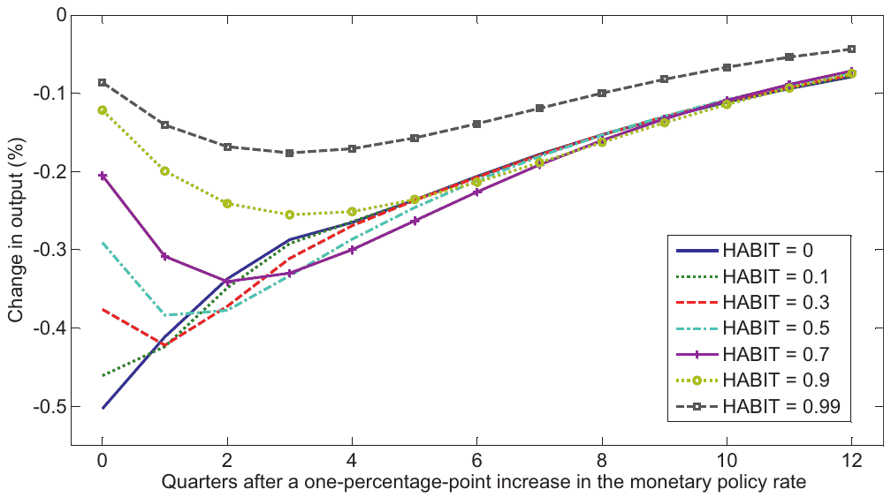
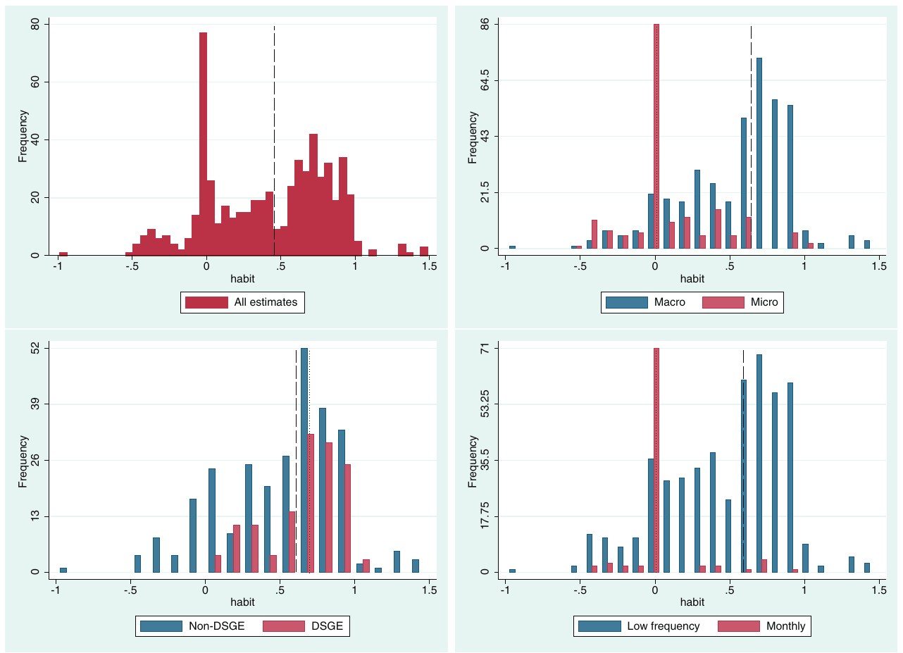
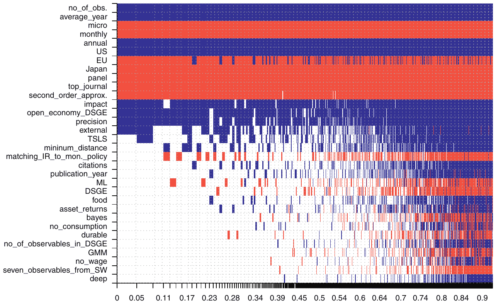
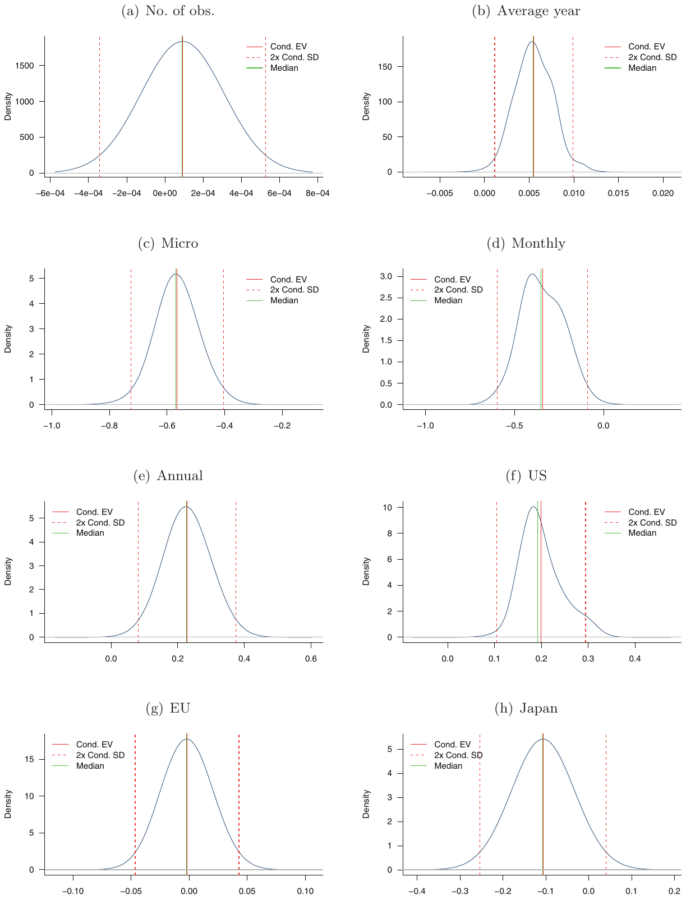
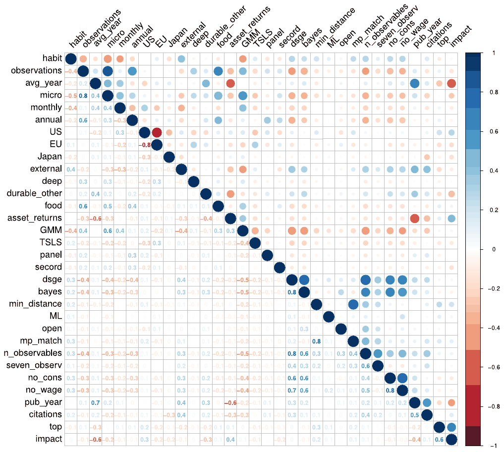
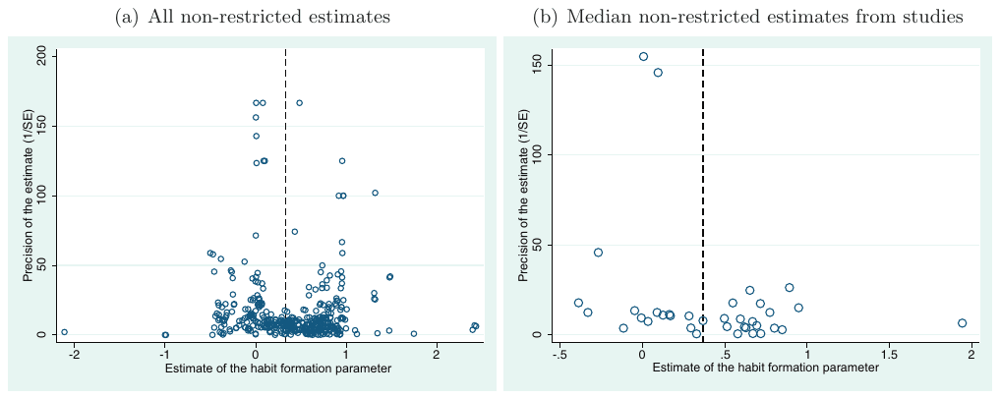

Habit Formation in Consumption: A Meta-Analysis
Tomas Havranek, Marek Rusnak, and Anna Sokolova (2017), "Habit Formation in Consumption: A Meta-Analysis." European Economic Review 95, 142-167. https://doi.org/10.1016/j.euroecorev.2017.03.009.
Tomas Havranek a,b,*, Marek Rusnak a,b, Anna Sokolova c,d
a Czech National Bank, Na Prikope 28, 115 03 Prague 1, Czechia
b Charles University, Opletalova 26, 110 00 Prague 1, Czechia
c National Research University Higher School of Economics, Krivokolennyy per. 3a, 101000 Moscow, Russia
d University of Nevada, 1664 N Virginia St, NV 89557, Reno, USA
* Corresponding author at: Czech National Bank, Czechia. E-mail address: tomas.havranek@ies-prague.org (T. Havranek).
An online appendix with data, code, and additional results is available at meta-analysis.cz/habits. We gratefully acknowledge helpful suggestions by the editor Eric Leeper, an anonymous associate editor, and two anonymous referees. We thank Jan Babecky, Alexei Boulatov, Kamil Galuscak, Zuzana Irsova, Simona Malovana, Udara Peiris, Sergey Pekarski, Herakles Polemarchakis, Tom Stanley, Federica Teppa, Dimitrios Tsomocos, and Stefan Zimmermann for their comments on earlier versions of the manuscript. We acknowledge support from the Czech Science Foundation (grant #15-02411S). Anna Sokolova acknowledges support from the Basic Research Program at the National Research University Higher School of Economics. The views expressed here are ours and not necessarily those of the Czech National Bank.
Article history: Received 18 July 2016; Accepted 17 March 2017; Available online 23 March 2017
JEL classification: C83, D12, E21
Abstract
We examine 597 estimates of habit formation reported in 81 published studies. The mean reported strength of habit formation equals 0.4, but the estimates vary widely both within and across studies. We use Bayesian and frequentist model averaging to assign a pattern to this variance while taking into account model uncertainty. Studies employing macro data report consistently larger estimates than micro studies: 0.6 vs. 0.1 on average. The difference remains 0.5 when we control for 30 factors that reflect the context in which researchers obtain their estimates, such as data frequency, geographical coverage, variable definition, estimation approach, and publication characteristics. We also find that evidence for habits strengthens when researchers use lower data frequencies, employ log-linear approximation of the Euler equation, and utilize open-economy DSGE models. Moreover, estimates of habits differ systematically across countries.
Keywords: Habit formation, Consumption, Meta-analysis, Bayesian model averaging, Frequentist model averaging
1. Introduction
The concept of habit formation in consumption is crucial for the explanation of various stylized facts in macroeconomics and finance. For example, in the asset pricing literature consumption habit helps reconcile the theory with the observed moments of asset returns. Mehra and Prescott (1985) show that the standard Lucas (1978) tree model fails to replicate the high equity premium and low risk-free rate at reasonable model parameters. Constantinides (1990) argues that habit formation solves this problem, as it can generate large variability in the marginal rate of substitution in consumption alongside smooth consumption growth—a feature that allows one to replicate high risk premium without having to rely on large risk aversion. Further refinements of the model suggested by Campbell and Cochrane (1999), Abel (1999), and Allais (2004) make it possible also to generate plausible variability in equity returns and the risk-free rate, while adding habits to a real business cycle framework helps explain the joint behavior of asset prices and consumption (Boldrin et al., 2001).

The presence of habit formation implies that past consumption choices affect current preferences. This notion violates the independence axiom used by Koopmans (1960) to derive the classic discounted utility model. Due to the growing popularity of models with habits, researchers have made efforts to develop theoretical underpinning for utility that is non-separable over time and features habit formation. Rozen (2010) lays out axiomatic foundation for a utility function displaying linear internal habits, describing a decision maker whose preferences depend on the history of past consumption choices. Rustichini and Siconolfi (2014) present a general axiomatic approach that allows for time-separable and non-separable utility as special cases, while He et al. (2013) put forward a model that incorporates habits as well as satiation in utility.
Studies that feature general equilibrium models have come to rely on consumption habit as a means of replicating a delayed hump-shaped response of macro variables to policy shocks (Fuhrer, 2000; Del Negro et al., 2007). This is because habit formation makes abrupt changes in consumption costly, thereby inducing smoothness in consumption dynamics (for a detailed discussion see Kano and Nason, 2014). But the quantitative predictions of such models largely depend on the size of the parameter specifying the strength of habit formation. Fig. 1 shows how the impulse response of output to a nominal interest rate shock changes in the popular model by Smets and Wouters (2007) when we assume different values of habit formation: the modeled behavior of the economy within one year after the shock depends heavily on the assumed strength of habits.1
Dozens of papers have estimated the habit formation parameter, but their results vary widely. The variance can be partially attributed to differences in the data used in the estimation: some studies analyze Euler equations for aggregate consumption (Carroll et al., 2011; Everaert and Pozzi, 2014; Fuhrer, 2000), some employ micro panel data sets (Alessie and Teppa, 2010; Collado and Browning, 2007; Dynan, 2000), and others use DSGE models (Christiano et al., 2005; Smets and Wouters, 2007), often employing prior values for the habit parameter. A brief look at the results of the seminal studies in each category suggests that the estimates are all over the place: Fuhrer (2000) shows that habit formation is crucial for his model to fit the data and obtains estimates that lie within the range 0.8–0.9. In contrast, Dynan (2000) uses panel household data and finds no evidence of habit formation. Christiano et al. (2005) estimate the same parameter using a DSGE model and obtain a value in the range 0.5–0.7.2
In this paper we investigate whether this diversity in the estimates of the habit parameter can be explained through differences in study designs used by researchers. We present what to our knowledge is the first quantitative synthesis—or a meta-analysis—of the evidence from the literature estimating habit formation. Meta-analyses attempt to trace variation in the estimates reported in the literature to differences in how the studies are conducted; it is the quantitative method of research review frequently used in medical research, which has recently become used by economists as well (Stanley, 2001). In economics the method has been applied to a wide range of topics: the effect of the minimum wage on unemployment (Card and Krueger, 1995), returns from education (Ashenfelter et al., 1999), the effect of distance on trade (Disdier and Head, 2008), the intertemporal elasticity of substitution in labor supply (Chetty et al., 2011), and the impact of FDI on domestic firms' productivity (Havranek and Irsova, 2011), among others.
We gather 81 published studies presenting estimates of habit formation and collect 31 aspects related to study design, such as the estimation techniques used, variable definition, data characteristics, geographical coverage, and model specification. We attempt to establish whether these aspects systematically affect the reported estimates of the habit parameter.
We cannot claim that our method allows us to explain variation in the true degree of habit formation; instead, we attempt to explain differences in its estimates reported in previous studies—a task that meta-analysis can accomplish. One obstacle that we face is the uncertainty over which of the 31 study characteristics should be included in the model approximating the process that generates habit estimates. To address this problem we employ Bayesian model averaging (BMA; Raftery et al., 1997; Moral-Benito, 2015)—a method that estimates many regressions consisting of subsets of the potential explanatory variables and weights them by model fit and model complexity. As a robustness check we use frequentist model averaging, which does not rely on Bayesian methods.
Our results show that the difference between micro estimates (think Dynan, 2000) and macro estimates (think Fuhrer, 2000) remains large even after controlling for other aspects of study design. This finding resonates with Chetty et al. (2011), who report similar divergence between micro and macro estimates in the literature estimating the intertemporal elasticity of labor supply. Furthermore, the frequency of the data used in the estimation matters: estimates from studies employing monthly data tend to be substantially smaller than those obtained with lower frequencies, with the largest estimates being associated with the use of annual data. We also find that the use of second-order approximation of the Euler equation yields smaller estimates, which indicates that it is important to account for the precautionary saving motive when evaluating habit formation. Estimates obtained using US data tend to be larger than those reported for Japan, Europe, and other regions. Additionally, our results suggest that among the DSGE studies the ones that rely on the open-economy framework typically require higher degrees of habit formation to match the dynamics of the observables.
By contrast, we find that studies using the moments of asset returns do not report estimates that differ systematically from those obtained without the use of stock market data. In a similar vein, given the features of the data employed by the particular study, the use of the DSGE methodology itself does not result in estimates that are systematically different from those obtained by other methods. This finding suggests that reproducing empirical moments of the data within structural models requires roughly the same degree of habit formation as what would typically arise from reduced-form estimation with similar data sets.
We do not find evidence of systematic differences between the estimated magnitude of external habits ("keeping up with the Joneses") and internal habits (past own consumption decreases present utility) when other data and method characteristics are controlled for. The result is in line with Dennis (2009), who shows that the distinction between internal and external habits has a limited effect on the business cycle characteristics of New Keynesian models, and Kano and Nason (2014), who show in their online appendix that for log-linear approximation of the Euler equation under additive habits there is observational equivalence between external and internal specifications.3 We also find that estimates of habits formed at the level of individual goods do not systematically differ from those of habits formed over the whole consumption bundle. Furthermore, studies using total non-durable consumption, food expenditures, or measures that include durable consumption come up with estimates that are roughly the same. However, we find that the use of simple panel techniques that do not rely on instrumental variables systematically affects the results. We also observe a correlation between the reported estimates and the characteristics of the journal where the study is published.
The remainder of the paper is structured as follows. Section 2 describes the approach we use to collect estimates of habit formation and presents the summary statistics for our data set. Section 3 investigates the sources of heterogeneity in the estimated habit formation parameters. Section 4 concludes. Appendix A provides the correlation matrix of the variables used, shows diagnostics of the Bayesian model averaging exercise, tests for publication bias in the literature, and a provides a robustness check using an alternative set of priors. Appendix B discusses issues related to model uncertainty. Appendix C shows the list of studies included in the data set. An online appendix with data, code, and additional results is available at meta-analysis.cz/habits.
2. The data set of habit formation estimates
2.1. Estimating the degree of habit formation
Modeling habit formation usually involves the following utility function:
where is a discount factor, denotes the instantaneous utility function, is the consumption of individual in period , is the reference habit stock, and captures the strength of habit formation ( gives the standard time-separable utility function). Papers that explore internal habits assume : lagged own consumption decreases current utility. Under internal habits, therefore, utility is determined by consumption growth, not just the level of current consumption. Papers studying external habits ("catching up with the Joneses," Abel, 1990) assume that utility is determined by the difference between the current consumption of an individual and the consumption of the corresponding reference group (for instance, the city where the consumer lives). External habits can be modeled by defining , where denotes aggregate consumption in the preceding period. Several studies investigate "deep" habits formed at the level of individual goods rather than the whole consumption bundle (e.g., Ravn et al., 2006; Lubik and Teo, 2014). Additionally, instead of using consumption directly, some papers use the variable "habit stock" defined by an autoregressive process (for example, Fuhrer, 2000). Finally, a few studies model habits using a multiplicative rather than an additive specification; for example, Andrés et al. (2009) and Bjornland et al. (2011).
A common approach to estimating is to evaluate an approximation of the consumption Euler equation that incorporates habits. For example, with internal habit formation instantaneous utility depends on the household's past consumption; therefore, from the households' perspective, an increase in consumption today affects not only utility of the current period, but also future utility—by affecting future habit stock. The marginal effect on welfare of an increase in current consumption is then given by
Habit-forming households will internalize this effect when making consumption decisions; this is reflected in the first-order condition of the households' problem:
which relates expected marginal effects of changes in and to the nominal interest rate and inflation .
As shown in Kano and Nason (2014), assuming that utility is logarithmic and total factor productivity is driven by a random walk, Euler equation (3) can be approximated by
where is the demeaned real interest rate, is a steady-state growth, and (see Kano and Nason 2014, Eq. (1)). Therefore, Euler equation (3) implies a relationship between current and past consumption growth, and a forward-looking component related to the expected discounted sum of future interest rates. Several studies derive their estimates of the habit parameter from a simplified version of approximation (4) that assumes a constant interest rate (e.g., Dynan, 2000; Carroll et al., 2011; Sommer, 2007). Furthermore, some studies employ higher-order approximations and account for the precautionary saving motive by including a measure of consumption risk in the estimated specification (e.g., Guariglia, 2002).
Approximation (4) is derived from the problem faced by an individual household, and a number of studies obtain estimates of habit formation by using individual household data (for example, Dynan, 2000; Guariglia, 2002; Alessie and Teppa, 2010). But micro studies often have data covering only short periods of time, and only on a fraction of consumption (such as food expenditures), and micro data are also often noisy, yielding imprecise estimates. Therefore, in practice similar specifications are often estimated on aggregate data. However, such treatment of the Euler equation may bias estimation results.
Attanasio and Weber (1993) point out that a correct aggregation of log-linear representation of the Euler equation necessitates examining a sum of the logarithms of the individual expenditures. Nevertheless, aggregate national accounts data only provide information on the sum of expenditures; researchers relying on aggregate data then take logarithms of the sum. Attanasio and Weber (1993) argue that if the cross-sectional distribution of expenditures varies over time, then the difference between the two measures will not be constant, and in fact is likely to be serially correlated. This induces serial correlation in the error term of log-specifications estimated on the aggregate data, a problem that could potentially lead to spurious results when estimating the habit parameter.
Another potential problem associated with the use of aggregate data stems from the fact that macro studies typically cannot account for households' taste shifters such as age, number of children, and employment status, all of which are likely to influence consumption decisions. Attanasio and Weber (1993) point out that when changes in these taste shifters do not cancel out after aggregating across the population, then the Euler equation cannot be consistently estimated on aggregate data. For example, it is well known that the consumption profile varies within the life cycle and depends on the individual's age (e.g., Attanasio and Weber, 1995). If population composition with respect to young and old changes over time, then the aggregate specification that does not account for this effect will be prone to omitted variable bias. Attanasio and Weber (1993) also argue that aggregation bias may arise if households do not have full information about aggregate events: that would make aggregate instruments invalid for identifying household preference parameters. All these issues may bias estimates of the habit parameter obtained using aggregate data.
The voluminous macro literature that estimates habits is diverse, employing various data sets and approaches to estimation, as we discuss below. These papers estimate consumption habit while studying issues like sticky consumption growth (Carroll et al., 2011), habit persistence in current account data (Gruber, 2004; Kano, 2009), predictability of aggregate consumption growth (Everaert and Pozzi, 2014), inflation dynamics (Fuhrer, 2000), and moments of asset returns (Heaton, 1995). Many estimates of the habit formation parameter come from dynamic stochastic general equilibrium models. Those estimates can be obtained by minimizing the distance between the model predictions and the empirical impulse response function (Christiano et al., 2005), by maximizing the likelihood of the state space representation of the model (Bouakez et al., 2005), or by using Bayesian methods (Smets and Wouters, 2007).
2.2. Collecting estimates of
The first step of any meta-analysis is to gather the empirical studies on the topic, usually referred to as "primary studies." To collect primary studies, meta-analyses in economics often employ the RePEc or EconLit databases. We use Google Scholar because it provides powerful full-text search, whereas RePEc and EconLit only allow searching through abstracts and keywords related to the studies, thereby making it harder to devise an exhaustive search query. We first collect papers that contain the exact phrases "habit formation" or "habit persistence" and, at the same time, feature occurrences or synonyms of the following words: consumption, estimate, regression, and empirical. After reading the abstracts of the studies returned by our search query we download those that show any promise of containing empirical estimates of the habit formation parameter. In the next step we extend our search to the references of these studies and add the last study on March 1, 2016.
We apply the following three inclusion criteria. First, the study must provide an empirical estimate of the habit formation parameter. Second, the study must include an estimate of the standard error (or a statistic from which the standard error can be computed). Finally, the third inclusion criterion is that the study must be published in a peer-reviewed journal. Meta-analyses differ in their treatment of unpublished results—sometimes they include unpublished papers as well, especially when the resulting data set would otherwise be small. Since there are many published studies estimating the habit formation parameter, we prefer to focus on studies that have been subjected to a peer-review process. We find 81 studies that comply with our selection criteria, and we list them in Appendix C.
Each primary study typically reports several estimates, and the median number of estimates per study is four. It is hard to pin down each study's representative estimate, because the authors themselves rarely say explicitly which one they prefer. Therefore, we collect all estimates reported in each study. This approach results in an unbalanced data set, as some studies report many more estimates than others—nevertheless, it allows us to exploit the differences in data and method choices both within and across individual studies. Wherever possible, we include study fixed effects to filter out the effects of study-level characteristics that are otherwise unobservable. All studies combined provide us with 597 estimates of the habit formation parameter, and for each of them we collect 31 variables reflecting the context in which researchers obtain the estimates.
The top-left panel of Fig. 2 present a histogram of the estimated parameters, providing additional insights. First, the distribution of the estimates is far from normal, and both the lower and upper boundaries of the range 0–1, consistent with habit formation, seem to affect the probability of an estimate being reported. This result, however, may also reflect the constraints that researchers use in the process of estimation. Second, while not normal, the distribution of estimates is relatively symmetric, as both the lower and the upper tails are cut off, and the mean estimate virtually equals the median. Third, the histogram has multiple peaks, suggesting heterogeneity generated by different estimation methods.
To shed some light on the sources of heterogeneity, we split the sample of all estimates into subsamples, depending on whether the study uses household-level or aggregate data (the top-right panel, Fig. 2). The histogram of micro estimates peaks at a much lower level of the habit parameter than that of macro estimates. Furthermore, neither distribution seems to be symmetrical: for micro studies, the right tail is heavier, while for macro studies the opposite holds. We further split the sample of macro studies, distinguishing between studies that estimate the habit parameter within DSGE models and those that use other techniques. The shapes of the histograms displayed on the bottom-left panel of Fig. 2 are similar, suggesting that two groups of estimates may come from the same distribution. Finally, we investigate the role played by the frequency of the data by splitting the overall sample into estimates obtained using monthly data versus data using lower frequencies (the bottom-right panel). Data frequency seems to affect the estimates' distribution, and the use of monthly data is likely to result in lower estimates of the habit parameter.
We compute average and median values for different groups of estimates and display them in Table 1. The overall mean of the reported estimates is approximately 0.4. Studies using micro data deliver much smaller estimates on average—about 0.1. By contrast, macro studies tend to generate larger estimates: around 0.6. Among the macro approaches to assessing habit formation, DSGE studies tend to yield slightly larger estimates. The nature of the habit formation process seems to matter, too. Estimates of internal habit formation average 0.3, while estimates of external habits tend to be more than twice as large at around 0.7. The difference between estimates of external and internal habits remains substantial, albeit smaller, even when we calculate the means separately for macro and micro studies. For macro data, estimates of external habits are still larger—this finding seems to contradict the argument of Carroll et al. (1997), who suggest that estimates of external and internal habits are empirically indistinguishable when using macro data. We will revisit the difference between internal and external habits in Section 3, where we will control for other aspects of study design. The conclusions outlined above remain intact even when we weight the estimates by the inverse of the number of estimates reported in each study, thereby giving each study the same weight regardless of the number of estimates the study produces.

Most estimates in our data set are obtained using US data (63%). All studies combined provide results for 17 countries, arguably contributing to the heterogeneity we observe, but the number of countries is not large enough to connect the differences in estimates to the structural differences among the economies. Nevertheless, in Table 2 we compare group averages for the US, Japan, countries belonging to the EU, and the rest of the countries (other OECD economies, such as Australia, Canada, New Zealand, and Korea) and notice several regularities. The estimates of habit formation for the US and EU tend to be larger on average than the estimates for Japan and other countries. At the same time, for macro studies the difference between Japan, the US, and the EU is smaller, while for micro data the highest estimates correspond to the group "other countries," which, however, only includes seven observations. It is not clear how to interpret these differences, as seeming cross-country diversity may be driven by differences among other features of the data sets, such as their length or frequency. Cross-country papers focusing on habit formation are rare, and the prominent study of this category, Carroll et al. (2011), finds homogeneous coefficients for a number of countries in our sample. Thus, we refrain from making any conclusions at this point, but will return to this issue in the more detailed analysis in the next section.
3. Why do estimates of habit formation vary?
3.1. Explanatory variables
We have noted that the estimates of habit formation differ substantially both within and between studies. In this section we attempt to relate the differences in the estimates to differences in the design of primary studies. To this end we collect 31 variables that reflect each study's data characteristics, geographical coverage, variable definitions, estimation technique, specification features (for studies estimating DSGE models), and publication characteristics (for example the number of citations). We cannot hope that these 31 variables will explain all differences across estimates—the set of potential explanatory variables is close to unlimited—but we believe that our selection reflects the most common choices faced by researchers who estimate habit formation.
| Unweighted Mean | Unweighted Median | Unweighted 5% | Unweighted 95% | Weighted Mean | Weighted Median | Weighted 5% | Weighted 95% | No. of est. | |
|---|---|---|---|---|---|---|---|---|---|
| All estimates | 0.43 | 0.47 | −0.32 | 0.97 | 0.55 | 0.62 | −0.21 | 0.98 | 597 |
| Micro studies | 0.10 | 0.00 | −0.39 | 0.62 | 0.12 | 0.08 | −0.41 | 0.62 | 183 |
| Macro studies | 0.57 | 0.66 | −0.11 | 0.98 | 0.62 | 0.69 | 0.00 | 0.99 | 414 |
| Internal | 0.28 | 0.15 | −0.38 | 0.95 | 0.41 | 0.44 | −0.34 | 0.96 | 369 |
| External | 0.66 | 0.67 | 0.16 | 1.00 | 0.72 | 0.71 | 0.16 | 1.48 | 228 |
| Asset returns | 0.43 | 0.62 | −0.44 | 0.96 | 0.47 | 0.57 | −0.29 | 0.96 | 87 |
| Micro-internal | 0.03 | 0.00 | −0.40 | 0.60 | 0.09 | 0.01 | −0.41 | 0.62 | 147 |
| Micro-external | 0.40 | 0.37 | 0.06 | 0.96 | 0.40 | 0.37 | 0.06 | 0.96 | 36 |
| Macro-internal | 0.45 | 0.61 | −0.33 | 0.97 | 0.51 | 0.63 | −0.22 | 0.98 | 222 |
| Macro-external | 0.70 | 0.71 | 0.21 | 1.00 | 0.73 | 0.73 | 0.19 | 1.48 | 192 |
| Macro-nonDSGE | 0.52 | 0.62 | −0.28 | 1.10 | 0.52 | 0.55 | −0.28 | 1.10 | 279 |
| Macro-DSGE | 0.67 | 0.71 | 0.16 | 0.97 | 0.68 | 0.71 | 0.18 | 0.98 | 135 |
Notes: 5% and 95% denote the corresponding percentiles. Weighted = summary statistics based on the observations weighted by the inverse of the number of estimates reported per individual study. In such case each study receives the same weight in the computation of the summary statistics.
| Unweighted Mean | Unweighted Median | Unweighted 5% | Unweighted 95% | Weighted Mean | Weighted Median | Weighted 5% | Weighted 95% | No. of est. | |
|---|---|---|---|---|---|---|---|---|---|
| All estimates | |||||||||
| US | 0.42 | 0.40 | −0.08 | 0.96 | 0.60 | 0.67 | −0.04 | 1.00 | 377 |
| EU countries | 0.51 | 0.63 | −0.27 | 1.00 | 0.48 | 0.61 | −0.27 | 0.91 | 151 |
| Japan | 0.07 | −0.23 | −0.46 | 0.94 | 0.32 | 0.39 | −0.41 | 0.96 | 27 |
| Other countries | 0.34 | 0.30 | −0.03 | 0.78 | 0.36 | 0.31 | −0.03 | 0.98 | 42 |
| Micro estimates | |||||||||
| US | 0.13 | 0.00 | −0.09 | 0.63 | 0.15 | 0.08 | −0.06 | 0.49 | 126 |
| EU countries | 0.10 | 0.07 | −0.46 | 0.99 | 0.08 | 0.03 | −0.46 | 0.62 | 36 |
| Japan | −0.37 | −0.39 | −0.50 | −0.23 | −0.37 | −0.39 | −0.50 | −0.23 | 14 |
| Other countries | 0.59 | 0.58 | 0.56 | 0.62 | 0.59 | 0.58 | 0.56 | 0.62 | 7 |
| Macro estimates | |||||||||
| US | 0.58 | 0.67 | −0.26 | 0.98 | 0.66 | 0.72 | 0.00 | 1.00 | 251 |
| EU countries | 0.64 | 0.70 | −0.08 | 1.12 | 0.60 | 0.69 | 0.07 | 0.91 | 115 |
| Japan | 0.55 | 0.64 | 0.02 | 0.96 | 0.50 | 0.39 | 0.09 | 0.96 | 13 |
| Other countries | 0.29 | 0.24 | −0.04 | 0.93 | 0.30 | 0.21 | −0.04 | 0.98 | 35 |
Notes: 5% and 95% denote the corresponding percentiles. Weighted = summary statistics based on the observations weighted by the inverse of the number of estimates reported per individual study. In such case each study receives the same weight in the computation of the summary statistics.
Data characteristics.
For each study we collect the number of observations and the average year of the data used. We specify whether the study employs micro or aggregate data, as the discussion in Section 2.1 and the statistics in Section 2.2 suggest that this dimension may have crucial effect on the estimates. We also control for the frequency of the data: Bansal et al. (2012) argue that studies estimating consumption Euler equations should account for the difference between the econometrician's sampling frequency and consumers' decision frequency; the authors estimate the latter to be approximately monthly. Habit formation estimates are likely to be affected by the data frequency because at sufficiently high frequencies every consumption good displays durability, rendering the habit formation parameter negative: a full meal makes people saturated for the next few hours. Most studies employ quarterly data; for those using monthly and annual data we include controls.
Countries examined.
Although habit formation is supposed to be a so-called deep parameter, differences in structural characteristics of economies (such as culture) might cause the parameter to vary across countries. Havranek et al. (2015a) find substantial cross-country heterogeneity in the elasticity of intertemporal substitution in consumption associated with cross-country differences in income and stock market participation. Since the number of countries investigated by the studies in our sample is small, we only use regional dummy variables instead of the underlying characteristics of the countries. We include dummies for US data, data on Japan, and data from countries that are members of the European Union. The remaining studies estimate the habit formation parameter for other non-European OECD countries.
Variable definitions.
In Section 2 we show that the mean reported estimates of internal and external habit formation differ. To see whether the difference holds after we control for other aspects of data and methodology, we create a dummy variable attributed to the type of habits under investigation. We also create a control for studies that investigate “deep” habits, for which the habit is formed over individual goods rather than the whole consumption basket. Such formulation has an important effect on the dynamics of DSGE models: it implies that habits affect not only the demand side of the economy, but also the supply side, as demand for individual goods becomes dependent on current sales, altering the optimal pricing behavior of firms and yielding countercyclical mark-ups of prices over marginal costs.
Estimates may also differ depending on the consumption good used in the estimation. Studies that include durable goods should obtain lower estimates of the habit formation parameter, while estimates based on food consumption may be biased if food is non-separable from other consumption goods (Attanasio and Weber, 1995). We distinguish three categories of consumption proxies: food consumption, total non-durable consumption, and measures that include durable consumption; non-durable consumption represents our reference category. Finally, a prominent group of studies obtain habit formation parameters by scrutinizing asset pricing moments—we create a control signifying whether the study uses financial data other than capturing returns on government bonds or the economy-wide risk-free interest rate.
Estimation approach.
A common wisdom in empirical economics is that different estimation approaches often yield different results. We want to find out whether the use of a particular method is associated with systematic differences in the reported habit formation parameter. Most studies estimate habit formation by using reduced-form regression models. For such studies the most common method choice is GMM, although some assume homoskedasticity and employ TSLS. A few panel studies use fixed effects estimation that does not account for the Nickell (1981) bias, or random effects estimation, the assumptions of which are unlikely to hold in consumption Euler equations. Finally, a small fraction of studies estimate habit formation with OLS—we use this estimation approach as the reference group (using, for example, Bayesian estimation as the baseline does not affect the results).
Most of the regression-based estimates are obtained by first-order approximation of the Euler equation. This approach is criticized by Carroll (2001), who argues that terms of higher order are correlated with structural parameters and thus cannot be ignored. Some studies in our sample use second-order approximation, which allows the researchers to account for the precautionary saving motive, relating consumption growth to the degree of income uncertainty. Finally, some studies obtain the habit formation parameter by estimating dynamic stochastic general equilibrium models. These studies use maximum-likelihood-based methods, minimum distance estimators, or Bayesian techniques.
DSGE specification.
While most DSGE studies in our sample model closed economies, some extend their analysis to the open-economy framework, introducing exchange rate and current account fluctuations. All such models in our sample can be classified as small-open-economy models in the sense that they do not allow for feedback from domestic variables to foreign output, inflation, and the interest rate. An exogenous world interest rate in particular may play an important role in how the model identifies consumption habit because it pins down domestic interest rate movements. (Unfortunately it is not feasible to control for the different version of open-economy DSGE models; additional dummy variables focusing on these aspects would have very limited variation.) Another feature of the DSGE approach we control for is the set of observables used for estimation. Guerron-Quintana (2010) argues that using too few observables may lead to identification problems and biased impulse responses. Specifically, excluding consumption or the real wage from the set of observables may cause bimodality in the model’s posterior and strongly affect the estimate of the habit parameter. The author compares model forecasting properties and impulse responses for different sets of observables and finds evidence in favor of the set that includes the seven observables used by Levin et al. (2005) and Smets and Wouters (2007).4 Moreover, Adolfson et al. (2008) suggest that models estimated to match impulse responses to monetary policy shocks (e.g., Christiano et al., 2005) tend to deliver lower real friction parameters than models estimated to match all variation in the observables. We introduce a corresponding dummy variable to account for these specification characteristics.
Publication characteristics.
Finally, we control for the publication characteristics of individual studies. We include the year of publication to capture methodological advances that are otherwise hard to codify or that have not been employed by a sufficient number of studies yet. To account for approximate study quality beyond the observed differences in data and methodology, we include the number of citations, the recursive impact factor of the journal that published the study, and a dummy variable for studies published in top journals. We collect the data on the impact factor from RePEc: unlike other databases, RePEc covers virtually all economics journals and provides a discounted recursive impact factor well-suited for comparison of outlets in economics.
Table 3 describes the 31 explanatory variables mentioned above, listing their means, standard deviations, and means weighted by the inverse of the number of estimates reported in individual studies. The correlation matrix of all the collected explanatory variables is presented in Fig. A1 in Appendix A; it shows that the variables reflect different aspects of the studies. A large correlation appears between micro data and the number of observations: micro-level studies tend to have more observations available than macro studies. Bayesian techniques are often employed within the framework of DSGE models, which renders the variable Bayes correlated with controls describing the set of observables. Furthermore, the DSGE models that do not include consumption in the set of observables tend to also omit wages, while studies that replicate responses to monetary policy shocks typically rely on minimum distance estimators. Finally, the positive correlation we observe between the year of publication of the study and the average year of data used in the study is intuitive.
| Variable | Description | Mean | Std. dev. | WM |
|---|---|---|---|---|
| Habit | The estimate of the habit formation parameter (response variable). | 0.43 | 0.45 | 0.55 |
| SE | The standard error of the estimate of the habit formation parameter. | 0.16 | 0.26 | 0.15 |
| Data characteristics | ||||
| No. of obs. | The logarithm of the number of observations. | 6.14 | 1.81 | 5.48 |
| Average year | The midpoint of the sample used for the estimation of habit formation (the base is the sample minimum: 1932). | 53.30 | 11.73 | 52.52 |
| Micro | = 1 if micro data are used for the estimation. | 0.31 | 0.46 | 0.15 |
| Monthly | = 1 if the frequency of the data used for the estimation is monthly. | 0.15 | 0.36 | 0.06 |
| Annual | = 1 if the frequency of the data used for the estimation is annual. | 0.32 | 0.47 | 0.20 |
| Countries examined | ||||
| US | = 1 if habit formation is estimated for the US. | 0.63 | 0.48 | 0.68 |
| EU | = 1 if habit formation is estimated for a country belonging to the EU. | 0.25 | 0.44 | 0.21 |
| Japan | = 1 if habit formation is estimated for Japan. | 0.05 | 0.21 | 0.06 |
| Variable definition | ||||
| External | = 1 if external habit formation is estimated. | 0.38 | 0.49 | 0.45 |
| Deep | = 1 if habits apply to individual goods. | 0.05 | 0.21 | 0.04 |
| Durable | = 1 if durable consumption goods are included in the measure of consumption. | 0.74 | 0.44 | 0.76 |
| Food | = 1 if food expenditures are used as a proxy for consumption. | 0.12 | 0.32 | 0.07 |
| Asset returns | = 1 if data on risky financial assets (e.g., stocks, house prices) are used. | 0.15 | 0.35 | 0.16 |
| Estimation approach | ||||
| GMM | = 1 if the general method of moments is employed for the estimation. | 0.46 | 0.50 | 0.27 |
| TSLS | = 1 if the two-step-least-squares method is employed for the estimation. | 0.14 | 0.35 | 0.06 |
| Panel | = 1 if a panel technique (fixed effects, random effects) is employed for the estimation. | 0.05 | 0.23 | 0.02 |
| Second-order approx. | = 1 if second-order approximation is employed. | 0.05 | 0.21 | 0.08 |
| DSGE | = 1 if the estimation uses a dynamic stochastic general equilibrium model. | 0.23 | 0.42 | 0.53 |
| Bayes | = 1 if the estimation uses Bayesian inference. | 0.20 | 0.40 | 0.42 |
| Minimum distance | = 1 if the minimum distance method is employed for the estimation. | 0.06 | 0.24 | 0.10 |
| ML | = 1 if the maximum likelihood method is employed. | 0.03 | 0.16 | 0.09 |
| DSGE specification | ||||
| Open-economy DSGE | = 1 if the open-economy DSGE framework is employed. | 0.02 | 0.13 | 0.05 |
| Matching IR to mon. policy | = 1 if the study matches theoretical and empirical impulse responses to monetary policy shocks. | 0.05 | 0.21 | 0.09 |
| No. of observables in DSGE | The number of observables the study matches. | 1.47 | 2.89 | 3.69 |
| Seven observables from SW | = 1 if the list of observables includes proxies for output, consumption, investment, the wage, labor, the interest rate, and inflation. | 0.06 | 0.23 | 0.16 |
| No consumption | = 1 if the list of observables does not include consumption. | 0.13 | 0.34 | 0.25 |
| No wage | = 1 if the list of observables does not include real wages. | 0.15 | 0.36 | 0.31 |
| Publication characteristics | ||||
| Publication year | The year in which the study was published (base = 1991). | 14.50 | 6.76 | 14.74 |
| Citations | The logarithm of the mean number of Google Scholar citations received per year since the study was published (collected in May 2016). | 0.54 | 0.33 | 0.62 |
| Top journal | = 1 if the study was published in one of the top five journals in economics. | 0.08 | 0.26 | 0.12 |
| Impact | The recursive discounted RePEc impact factor of the outlet (collected in May 2016). | 0.88 | 0.80 | 1.00 |
Notes: The variables are collected from published studies estimating the habit formation parameter. The following journals are considered top journals in economics: American Economic Review, Econometrica, Journal of Political Economy, Quarterly Journal of Economics, and Review of Economic Studies. WM = mean weighted by the inverse of the number of estimates reported in a study.
3.2. Estimation and results
Estimates of the habit parameter may vary both because of variation in the underlying degree of habit formation for different data sets (e.g., due to cultural differences across countries) and because of differences in estimation methods (e.g., due to differences in how the study approximates the Euler equation). In the previous subsection we pointed out 31 factors that in our view can contribute to explaining the heterogeneity among the estimates. A number of studies in our sample already explore the effects of some of these elements by conducting a series of experiments with data sets and methodologies. Researcher wishing to study variation across data sets can estimate the habit parameter on different data and compare results (e.g., Carroll et al. 2011 who make cross-country comparisons, or Ferson and Constantinides 1991 who compare results for data of different frequencies and definitions of consumption). To examine the consequences of using certain methodology, studies can compare results obtained by applying different methods to the same data (e.g., Guerron-Quintana 2010 who studies the effects of varying the set of observables in DSGE, or Korniotis, 2010 who uses a log-linear approximation of the Euler equation that incorporates both internal and external habits to compare the two specifications; he also adds a term capturing consumption risk to the log-linear specification to check whether accounting for the precautionary saving motive alters habit estimates).
While the methodology outlined above could potentially shed light on some of the sources of heterogeneity, it also has major disadvantages. First, with this strategy it is impossible to address all 31 aspects of study design within the same framework. Habit parameter estimates can be obtained using data and methods that differ along many dimensions, some of which impact the estimates’ distribution (e.g., see Fig. 2, in which we compare the distribution of micro and macro estimates). This means that we would not be able to draw meaningful quantitative comparisons of the associated effects, unless we explicitly assumed that some of the 31 factors could be excluded from consideration without loss of generality. Second, this method would not address the variation observed in the literature, as doing so requires factoring in both quantitative effects associated with each aspect of study design as well as data describing the literature itself.
For example, studies that apply DSGE methodology seem to come up with estimates that are larger than the average. This may be because matching dynamics of the observables in DSGE models requires a degree of habit formation that is higher than that estimated from individual Euler equations—an observation that would make the two methods seem inconsistent with each other. An alternative explanation, however, would say that this is because studies that use macro data suffer from aggregation bias, and that includes studies estimating DSGE models. We cannot construct a DSGE study that would use micro data and account for households’ taste shifters. We could potentially compare estimates obtained on the same macro data set by using DSGE and non-DSGE approaches, but it is not straightforward which DSGE specification should be used (e.g., open or closed economy), which observables should be matched, etc. Furthermore, it is not clear whether quantitative comparisons drawn from such exercise can be used to infer something about similar differences for different data.
In this paper we would like to make quantitative comparisons of the effects of all 31 explanatory variables on the estimates of the habit parameter, which is why instead of taking the approach outlined above we perform a meta-analysis. Rather than evaluating the degree of habit formation from consumption data while trying to fit all the different approaches and methodologies into a unified framework—a task that we deem impossible to accomplish—we focus on the estimates that were previously obtained within the literature and investigate their variation. We consider the following regression:
where is an i-th estimate from a j-th study, and is a corresponding value of the k-th explanatory variable (introduced in the previous subsection). Model (5) is meant to approximate the process generating estimates of the habit parameter. Estimating (5) would not allow us to comment on the sources of variation in the habit parameter itself, but it would capture some of the variation in the habit parameter estimates, and allow for meaningful quantitative comparisons of the effects of choosing different study designs.
We believe that each variable in our set can contribute to explaining the heterogeneity among the estimates. But including all 31 variables in the regression would inflate the standard errors and yield inefficient estimates, because some of the variables are likely to prove redundant. The theory does not give us enough guidance to determine the exact subset of the 31 variables that should be included in the final regression. Sequential t-testing (sometimes called the “general-to-specific approach”), which is often used to decide which variables belong to the underlying model, is not statistically valid and gives rise to the possibility of excluding relevant variables. The large number of potential variables thus brings about problems related to model uncertainty that could result in severely erroneous inference. To address these issues, we employ the Bayesian model averaging technique (BMA)—a method that does not require selecting one individual specification.
Inference in BMA is based on a weighted average of individual regressions that include different combinations of explanatory variables; the weights reflect the posterior model probabilities (PMPs) of the corresponding individual specifications. PMPs can be thought of as a Bayesian analogy of information criteria used in frequentist econometrics (at least under certain assumptions, such as that model shocks are Gaussian). Researchers typically want to check the robustness of their results by estimating several regressions that include different combinations of explanatory variables; BMA generalizes this approach. Our intention here is to explain the basics of the BMA method and the terms needed for inference, not to give an exhaustive introduction to the BMA procedure; readers interested in such information should consult Koop (2003) for an introduction and Moral-Benito (2015) for a survey of BMA applications in economics. BMA have been used in meta-analysis, among others, by Havranek and Irsova (2017) and Irsova and Havranek (2013).
Estimating regression (5) means treating the estimates of habit as if they were observed data points. Nevertheless, each estimate is specific to the data set used in the estimation process and has a degree of uncertainty attached to it. Because of this feature our application of BMA departs from the standard approach: we explore uncertainty over which of the 31 elements should belong in auxiliary regression (5) describing the estimates, while leaving out uncertainty related to the structural models (e.g., the specification of log-linear Euler equation (4)) that our primary studies choose to estimate (see Appendix B for further discussion).
We partially address some of the problems arising from treating estimates as data with the following strategy. First, we fix a subset of eight variables pertaining to data characteristics and geographical coverage, so that all eight variables appear in every regression estimated in the BMA exercise. In other words, we condition the estimates on the use of data of similar extent, age, aggregation, frequency, and regional coverage—any regression that fails to control for these factors is likely to suffer from omitted variable bias. Second, following the literature on estimated dependent variable models, we weight each observation by the precision of the estimates , effectively giving more weight to estimates that are more precise.
All of the computations are performed using the R package BMS. Estimating all possible specifications is computationally too demanding—therefore, we approximate the whole model space by using the Model Composition Markov Chain Monte Carlo algorithm (Madigan and York, 1995), which only traverses the most important part of the model space: that is, the models with high posterior model probabilities. Such a simplification is commonly applied in applications of BMA (see, for example, Feldkircher and Zeugner, 2009). For the BMA estimation we also have to choose priors for the parameters and model space. We follow Eicher et al. (2011), who recommend using the unit information prior for the parameters and the uniform model prior for the model space because these priors perform well in predictive exercises. Our prior setting can be interpreted as follows: the unit information prior provides the same amount of information as one observation of data, while the uniform model prior means that each model has the same prior probability (thereby giving higher prior probabilities to medium model sizes).
Fig. 3 presents the results of the BMA exercise. The variables are sorted from top to bottom by posterior inclusion probability (which can be thought of as a Bayesian analogy of statistical significance); the columns denote individual models. The color of the cell reflects the sign of the corresponding regression coefficient: negative signs are depicted in red (lighter in greyscale) and positive ones in blue (darker in greyscale); a white cell means that the variable is not included in the given model. The width of the columns is proportional to the posterior model probability (that is, how well the model fits the data relative to its size). Apart from the eight variables we fix, the most important variables in explaining the heterogeneity among the estimates are Panel, Top, Second-order approx., Impact, Open, and External. The regression signs for all of these variables are stable regardless of whether or not other control variables are included.
Table 4 presents the numerical results of Bayesian model averaging. In BMA the key statistic is the posterior inclusion probability (PIP), which reflects the importance of each variable. For a given variable the PIP is calculated by summing the posterior model probabilities of all models in which the variable is included. According to the rule of thumb proposed by Jeffreys (1961) and refined by Kass and Raftery (1995), the significance of each regressor is weak, positive, strong, or decisive if the PIP lies between 0.5 and 0.75, 0.75 and 0.95, 0.95 and 0.99, or 0.99 and 1, respectively. Additionally, we plot the posterior distribution of the estimated parameters corresponding to the first eight variables we fix, because for these variables the PIP is not informative: in the BMA exercise we force it to equal 1 by design (see Fig. 4). We can see that the posterior means for the parameter estimates for all the variables except Japan and EU are more than two posterior standard deviations away from zero.
The level of data aggregation seems to be crucial for explaining the differences among estimates: micro data dramatically reduce estimates of habits (by more than 0.5), which corroborates the conclusion drawn from the histograms and summary statistics in Section 2. This resonates with the findings of Attanasio and Weber (1993) who argue that substituting national accounts data into log-linear Euler equations means incorrectly aggregating Euler equations of individual households, and that not accounting for taste shifters of individual households or household cohorts may make Euler equation estimation inconsistent (see discussion in Section 2).
Attanasio and Weber (1993) show that specifications that do not factor in these effects fail to pass the excess sensitivity test, delivering significant correlation between changes in consumption and predictable changes in income. Our results point toward a similar problem. If changes in demographic and labor market characteristics do not even out across the population (e.g., due to population aging, or because labor market participation follows the business cycle), then past changes in consumption may partially proxy for these omitted effects, resulting in a biased estimate of the habits parameter.

Another key factor is data frequency: the higher the frequency, the lower the estimate of habit formation, with the lowest estimates corresponding to monthly data. At high frequency substitution effects in consumption get more important, as some consumer goods become durable. For example, clothing expenditure will probably show durability at monthly frequency, but not at annual frequency. This notion is in line with the findings of Eichenbaum and Hansen (1990) and Dunn and Singleton (1986), who report evidence of such substitution at monthly frequencies, and Heaton, 1995) and Allais (2004), who show that adding consumption substitution at nearby dates to an asset pricing model featuring habit formation improves model fit for moments of asset returns. Alternatively, the higher estimates reported for low frequencies may result from a bias introduced by time aggregation: Heaton, 1995) points out that if the decision frequency is higher than that of the data, time aggregation can induce positive autocorrelation in changes in consumption.
We find some evidence of country heterogeneity in the estimates of habit formation. The parameters estimated for the US tend to be 0.2 larger than those reported for other countries (and Japan in particular). To our knowledge, the only study that discusses cross-country differences in habit formation is Carroll et al. (2011), who find little heterogeneity across countries, but do not consider Japan. The cross-country differences in habit formation might reflect cultural differences—nevertheless, the specifics of the data may play a role, too. For instance, Carroll et al. (2011) mention several problems with Japanese data on consumption related to adjustments in the Japanese national accounts methodology.
Furthermore, we find that some estimation techniques deliver results systematically different from those obtained via other methods. The use of simple panel data techniques such as fixed effect method results in estimates that are substantially smaller. On the one hand, such methods can take into account heterogeneity between individuals beyond that captured by observed taste shifters. On the other hand, they may be prone to Nickell (1981) bias resulting from not taking into account the endogeneity created by including a lagged value of the dependent variable among the explanatory variables. Our result corroborates observations made by Naik and Moore (1996) who document that the use of fixed effects reduces estimates of the habits parameter. As noted before, studies that employ first-order approximation of the Euler equation cannot account for the precautionary saving motive, in the presence of which growth in consumption depends positively on the degree of consumption risk, as households postpone consumption when faced with uncertainty. This feature may be important for estimating habits: if consumption uncertainty is correlated with lagged consumption growth, then first-order approximation will bias the estimate of the habit formation parameter because lagged consumption growth would partially proxy for precautionary saving. We find support for this conjecture, as the use of second-order approximation tends to reduce the estimate of habit formation by about 0.4.

| Response variable: | Bayesian model averaging | ||
|---|---|---|---|
| Estimate of habit formation | Post. mean | Post. std. dev. | PIP |
| Precision | 0.258 | 0.155 | 0.836 |
| Data characteristics | |||
| No. of obs. | 0.000092 | 0.0002 | 1.000 |
| Average year | 0.006 | 0.002 | 1.000 |
| Micro | −0.565 | 0.080 | 1.000 |
| Monthly | −0.343 | 0.127 | 1.000 |
| Annual | 0.228 | 0.073 | 1.000 |
| Countries examined | |||
| US | 0.199 | 0.048 | 1.000 |
| EU | −0.002 | 0.022 | 1.000 |
| Japan | −0.107 | 0.074 | 1.000 |
| Variable definition | |||
| External | 0.093 | 0.101 | 0.538 |
| Deep | 0.001 | 0.007 | 0.041 |
| Durable | −0.002 | 0.016 | 0.066 |
| Food | 0.016 | 0.053 | 0.120 |
| Asset returns | 0.013 | 0.054 | 0.119 |
| Estimation approach | |||
| GMM | −0.003 | 0.024 | 0.058 |
| TSLS | 0.080 | 0.124 | 0.353 |
| Panel | −0.525 | 0.069 | 1.000 |
| Second-order approx. | −0.385 | 0.118 | 0.982 |
| DSGE | −0.018 | 0.060 | 0.136 |
| Bayes | −0.004 | 0.025 | 0.076 |
| Minimum distance | 0.085 | 0.157 | 0.286 |
| ML | −0.005 | 0.040 | 0.161 |
| DSGE specification | |||
| Open | 0.226 | 0.110 | 0.893 |
| Matching IR to mon. policy | −0.024 | 0.057 | 0.249 |
| No. of observables | 0.001 | 0.006 | 0.062 |
| Seven observables from SW | −0.003 | 0.026 | 0.042 |
| No consumption | 0.002 | 0.017 | 0.067 |
| No wage | 0.001 | 0.013 | 0.044 |
| Publication characteristics | |||
| Publication year | 0.002 | 0.005 | 0.164 |
| Citations | 0.018 | 0.047 | 0.174 |
| Top journal | −0.571 | 0.119 | 1.000 |
| Impact | 0.125 | 0.061 | 0.923 |
| Constant | −2.802 | NA | 1.000 |
| Studies | 81 | ||
| Observations | 597 |
Notes: PIP = posterior inclusion probability. More details on the BMA estimation are available in Table A1 and Figure A2.
The BMA exercise suggests that the specification of habit as external slightly increases the estimated parameter (by about 0.1), even though the PIP is weak according to the classification by Kass and Raftery (1995). This contradicts our observation based on Table 1 that estimates of external habits are 0.4 higher on average. Nevertheless, the contradiction can be explained by three observations. First, micro studies use internal habits about four times more often than macro studies, as shown in Table 1. This feature is likely to increase the average difference between external and internal specifications, as micro studies deliver lower estimates regardless of the method used. Second, all 100 estimates obtained from monthly data pertain to internal habits, which also plays a role, as high-frequency data deliver lower estimates. Third, 26 out of the 28 estimates obtained via second-order approximation employ internal habits, which has a similar downward effect on the average internal habits parameter.
It is well known that to replicate certain empirical facts (i.e., the response of consumption and output to a monetary policy shock) DSGE models require a high degree of habit persistence. Therefore, it is reasonable to expect the DSGE methodology to deliver higher estimates of the habit formation parameter. At the same time, DSGE studies use exclusively macro data, which are prone to aggregation bias. Furthermore, none of the DSGE studies in our sample employ data at monthly frequency. We find that the reason for the higher average DSGE estimates is most likely the fact that DSGE studies use aggregate data of low frequencies, not the DSGE methodology itself. This result is supported by histograms in Fig. 2 indicating that estimates obtained within DSGE models seem to belong to the same distribution as other macro estimates. Our finding echoes that of Kano and Nason (2014), who point out the resemblance between the impulse response functions obtained within DSGE models that include consumption habits and those generated using the log-linear approximation of the Euler equation (4) on its own. At the same time, among the DSGE models, those featuring open economies tend to deliver estimates of habit formation that are about 0.2 higher. This result corroborates the observation made by Adolfson et al. (2008), who compare open- and closed-economy estimates of habit formation and find that habits tend to show stronger in open-economy models. Moreover, our results suggest that when other aspects of the data are controlled for, studies scrutinizing moments of asset returns report estimates that are close to those found in the rest of the literature.
We perform a robustness check using an alternative prior setup, employing the benchmark g-priors for the parameters suggested by Fernandez et al. (2001) along with the beta-binomial model prior for the model space, which gives each model size equal prior probability (Ley and Steel, 2009). The results, reported in Table A2, are very similar to the baseline specification, with one notable exception: the posterior inclusion probability pertaining to External drops below 0.5, rendering this variable ineffective in explaining any variation among the reported estimates of habit formation.
3.3. Frequentist model averaging
We have stressed earlier that our dependent variable (habit parameters reported in previous studies) is estimated, which gives rise to conceptual problems for the BMA technique most commonly used in model averaging exercises. We have tried to address this issue in three ways: by including the data characteristics to all models estimated by BMA, by using precision of the estimates as weights, and by discussing the potential implications of this problem for our results (see Appendix B). An alternative approach is to employ a frequentist method of model averaging and for individual regressions utilize the standard technique of the literature on estimated dependent variable models.
The intuition of frequentist model averaging is analogous to that of BMA discussed in detail earlier: many models featuring different combinations of explanatory variables are estimated and weighted according to their goodness of fit and parsimony. The dominance of BMA in model averaging applications is given by the computational ease of Bayesian relative to frequentist methods in this field. For example, we are not aware of any previous meta-analysis that would employ frequentist model averaging. Many studies, especially in the literature on growth determinants, use combinations of Bayesian and frequentist approaches (for example, Sala-I-Martin et al., 2004). The few studies that rely on purely frequentist techniques typically use information criteria as weights. Nevertheless, Hansen (2007) shows that weights selected by minimizing the Mallows criterion (an estimate of the average squared error from the model average fit) are asymptotically optimal. Another problem is how to simplify the model space: it would take us several months to estimate all the models, and we cannot use the Model Composition Markov Chain Monte Carlo algorithm that helped us in the case of BMA. We therefore follow the approach suggested by Amini and Parmeter (2012), who build on the pioneering insight of Magnus et al. (2010) and use orthogonalization of the covariate space, thus reducing the number of models that need to be estimated from to 32. In individual regressions we use inverse-variance weights to account for the estimated dependent variable issue.
The results of frequentist model averaging are shown in Table 5 and are broadly similar to that of BMA. It is worth noting at this point that the standard errors displayed in the table are approximate and probably conservative (Amini and Parmeter, 2012), since a formal asymptotic theory for Mallows model averaging is still to be developed. We can see from the table that, even using the frequentist approach, micro estimates are found to be substantially smaller than macro estimates on average (the difference is even larger than what BMA suggests). Next, the frequency of the data matters, as studies with annual data tend to find substantially more evidence for consumption habit. Habit formation is stronger for the US than for other countries, which is also consistent with the BMA evidence. Once again we find no significant difference between the estimates of internal and external habit once other aspects of data and methodology are controlled for. Simple panel data techniques bring systematically smaller estimates of consumption habit, which might be caused by Nickell (1981) bias. Open-economy DSGE models are associated with larger habit estimates, and the top journals in economics tend to report, ceteris paribus, weaker evidence for habits compared to other outlets.
| Response variable: | Frequentist model averaging | ||
|---|---|---|---|
| Estimate of habit formation | Coef. | Std. er. | p-value |
| Precision (1/SE) | 0.563 | 0.457 | 0.218 |
| Data characteristics | |||
| No. of obs. | 0.000 | 0.000 | 1.000 |
| Average year | 0.000 | 0.006 | 1.000 |
| Micro | −0.836 | 0.365 | 0.022 |
| Monthly | −0.000 | 0.276 | 1.000 |
| Annual | 0.356 | 0.136 | 0.009 |
| Countries examined | |||
| US | 0.264 | 0.070 | 0.000 |
| EU | −0.000 | 0.002 | 1.000 |
| Japan | −0.000 | 0.076 | 1.000 |
| Variable definition | |||
| External | 0.098 | 0.197 | 0.619 |
| Deep | 0.000 | 0.025 | 1.000 |
| Durable | −0.000 | 0.007 | 1.000 |
| Food | 0.000 | 0.068 | 1.000 |
| Asset returns | 0.000 | 0.226 | 1.000 |
| Estimation approach | |||
| GMM | −0.000 | 0.051 | 1.000 |
| TSLS | 0.000 | 0.286 | 1.000 |
| Panel | −0.405 | 0.120 | 0.001 |
| Second-order approx. | −0.000 | 0.367 | 1.000 |
| DSGE | −0.000 | 0.025 | 1.000 |
| Bayes | −0.000 | 0.056 | 1.000 |
| Minimum distance | 0.000 | 0.725 | 1.000 |
| ML | 0.000 | 0.263 | 1.000 |
| DSGE specification | |||
| Open | 0.342 | 0.056 | 0.000 |
| Matching IR to mon. policy | −0.000 | 0.323 | 1.000 |
| No. of observables | −0.000 | 0.022 | 1.000 |
| Seven observables from SW | 0.000 | 0.006 | 1.000 |
| No consumption | 0.000 | 0.051 | 1.000 |
| No wage | 0.000 | 0.019 | 1.000 |
| Publication characteristics | |||
| Publication year | 0.000 | 0.002 | 1.000 |
| Citations | 0.000 | 0.108 | 1.000 |
| Top journal | −0.414 | 0.185 | 0.025 |
| Impact | 0.062 | 0.105 | 0.552 |
| Constant | −3.011 | 0.803 | 0.000 |
| Studies | 81 | ||
| Observations | 597 |
Notes: Frequentist model averaging requires full enumeration of models, which are weighted by information criteria. We employ Mallow's criterion to select the weights since it delivers weights that are asymptotically optimal. Because our model consists of 32 potential explanatory variables, the model space is huge, , and full enumeration would take a prohibitive amount of time. We therefore follow the approach suggested by Amini and Parmeter (2012), who build on Magnus et al. (2010), and use orthogonalization of the covariate space, thus reducing the number of models that need to be estimated from to 32.
4. Concluding remarks
In this paper we collect and examine estimates of the habit formation parameter previously reported in the literature. We document that the mean value of the parameter is 0.4 overall, but that it differs greatly between micro studies (0.1) and macro studies (0.6). None of these values is large enough to explain some of the best-known empirical puzzles in macroeconomics and finance: for example, Constantinides (1990) shows that to account for the equity premium puzzle the habit formation parameter must exceed 0.8, while Fuhrer (2000) reproduces a humped-shaped response of consumption to various shocks with values of habit formation in the range 0.8–0.9. We find that the mean habit formation parameter produced by studies that estimate DSGE models is close to 0.7, which seems to corroborate the notion that structural estimation requires a high degree of habit formation. Nevertheless, when we turn to a more detailed investigation and control for the context in which researchers obtain their estimates, we get alternative explanations for the large habit formation reported by DSGE studies.
We show that the specifics of the data have a crucial impact on the estimated consumption habit. The difference between the results of micro and macro studies remains large when 30 other aspects of study design are controlled for. The distinction arises because micro and macro studies focus on different sources of variation in consumption: micro studies exploit variation at the level of individual households, but often lack information on consumption patterns over longer time horizons (and typically only use a fraction of consumption, such as food expenditures). By contrast, macro studies make use of consumption variation over time, while neglecting demographic characteristics and taste shifters. Our results also suggest that the frequency of the data matters—estimates obtained employing monthly frequency tend to be substantially smaller than when quarterly and annual frequencies are used. This finding may be due to the fact that at higher frequencies more consumption goods are likely to display durability, or may arise because of the time aggregation problem widely recognized in the asset pricing literature (e.g., Heaton, 1995).
We also find evidence indicating the importance of the order of approximation of the Euler equation: the use of second-order approximation tends to reduce the estimate of consumption habit. This result may signify that the precautionary saving motive plays an important role in the behavior of consumers. By contrast, we find that the use of the DSGE methodology per se (when other aspects of study design are controlled for) does not necessarily yield higher estimates of habits. Thus, a part of the explanation of why many estimated structural models require high degrees of habit formation may lie in their use of aggregate and low-frequency data. Additionally, because such studies typically rely on log-linearized specifications, they might be subject to the omitted variable bias, as high estimates of habits may partially capture the precautionary saving motive we have mentioned. Similarly, we find that, everything else being held equal, studies focusing on moments of asset returns deliver habit parameters that are roughly the same as those reported by other studies. We also show that estimates reported in DSGE studies are affected by model specification: in line with Adolfson et al. (2008), our results indicate that open-economy models tend to report higher estimates of habit formation than closed-economy models. Finally, unlike Carroll et al. (2011), we find cross-country heterogeneity in habit formation, with the US displaying stronger habit formation than other countries.
Appendix A. Supplementary Statistics and Analysis
A.1. Correlation of the Variables

A.2. Diagnostics of BMA
| Mean no. regressors | Draws | Burn-ins | Time |
|---|---|---|---|
| 16.5482 | 3e + 06 | 1e + 06 | 10.33624 minutes |
| No. models visited | Modelspace | Visited | Topmodels |
| 749,088 | 4.3e + 09 | 0.017% | 92% |
| Corr PMP | No. Obs. | Model Prior | g-Prior |
| 0.9996 | 597 | uniform | UIP |
| Shrinkage-Stats | |||
| Av= 0.9983 |
Notes: In this specification we employ the priors suggested by Eicher et al. (2011) based on the predictive performance: the uniform model prior (each model has the same prior probability) and the unit information prior (the prior provides the same amount of information as one observation of the data).
Figure A2. Model size and convergence. The figure is in the PDF.
A.3. Alternative Priors for BMA
| Response variable: | Bayesian model averaging | ||
|---|---|---|---|
| Estimate of habit formation | Post. mean | Post. std. dev. | PIP |
| Precision (1/SE) | 0.272 | 0.144 | 0.878 |
| Data characteristics | |||
| No. of obs. | 0.000093 | 0.0002 | 1.000 |
| Average year | 0.006 | 0.002 | 1.000 |
| Micro | −0.572 | 0.072 | 1.000 |
| Monthly | −0.357 | 0.119 | 1.000 |
| Annual | 0.226 | 0.067 | 1.000 |
| Countries examined | |||
| US | 0.201 | 0.047 | 1.000 |
| EU | −0.002 | 0.021 | 1.000 |
| Japan | −0.112 | 0.069 | 1.000 |
| Variable definition | |||
| External | 0.073 | 0.093 | 0.437 |
| Deep | 0.000 | 0.004 | 0.020 |
| Durable | −0.001 | 0.011 | 0.035 |
| Food | 0.012 | 0.047 | 0.079 |
| Asset returns | 0.006 | 0.039 | 0.062 |
| Estimation approach | |||
| GMM | −0.002 | 0.017 | 0.029 |
| TSLS | 0.055 | 0.109 | 0.238 |
| Panel | −0.528 | 0.064 | 1.000 |
| Second-order approx. | −0.392 | 0.112 | 0.983 |
| DSGE | −0.011 | 0.045 | 0.086 |
| Bayes | −0.002 | 0.017 | 0.038 |
| Minimum distance | 0.058 | 0.134 | 0.192 |
| ML | −0.005 | 0.032 | 0.123 |
| DSGE specification | |||
| Open | 0.216 | 0.100 | 0.907 |
| Matching IR to mon. policy | −0.021 | 0.050 | 0.210 |
| No. of observables | 0.000 | 0.004 | 0.033 |
| Seven observables from SW | −0.002 | 0.018 | 0.021 |
| No consumption | 0.001 | 0.012 | 0.037 |
| No wage | 0.000 | 0.009 | 0.021 |
| Publication characteristics | |||
| Publication year | 0.002 | 0.005 | 0.124 |
| Citations | 0.012 | 0.037 | 0.111 |
| Top journal | −0.563 | 0.117 | 1.000 |
| Impact | 0.119 | 0.062 | 0.901 |
| Constant | −2.753 | NA | 1.000 |
| Studies | 81 | ||
| Observations | 597 |
Notes: PIP = posterior inclusion probability. We use an alternative to the unit information prior, the BRIC prior suggested by Fernandez et al. (2001), which takes into account the number of explanatory variables for the determination of the weight of the zero prior for the regression parameters. In this set of priors we also employ the random beta-binomial model prior (Ley and Steel, 2009), which implies that each model size has the same prior probability.
A.4. Publication Bias
The mean and median reported estimates may represent a biased reflection of the underlying research results if some estimates are more likely than others to be selected for publication. For this reason, most meta-analyses test—and, if necessary, correct—for so-called publication bias. Brodeur et al. (2016) collect 50,000 p-values reported in economics and document widespread publication bias. A recent survey among the members of the European Economic Association, Necker (2014), reveals that a third of economists in Europe admit that they have engaged in presenting empirical findings selectively so they confirm their arguments and in searching for control variables until they get a desired result. Ioannidis et al. (2017) survey meta-analyses conducted in economics and find that most fields suffer from the bias, as editors, referees, or authors themselves prefer statistically significant results that have an intuitive sign.

Frequently discussed cases of publication bias include the literature on productivity spillovers from FDI (Havranek and Irsova, 2012), price elasticity of gasoline demand (Havranek et al., 2012), and social cost of carbon (Havranek et al., 2015b). Havranek (2015) finds strong publication bias in the literature that uses consumption Euler equations to estimate the elasticity of intertemporal substitution (often the same specification used to estimate habit formation).5 Most economists believe that the elasticity of substitution should be positive because negative elasticity implies a convex utility function. Therefore, negative estimates of the elasticity are rarely reported in the literature, as are statistically insignificant estimates. The underreporting of negative estimates and estimates that are positive but small and imprecise biases the means upward because it is not matched by corresponding under-reporting of large imprecise estimates.
The empirical literature on habit formation differs from studies estimating the elasticity of intertemporal substitution in two major aspects. First, negative estimates of habit formation allow for intuitive interpretation: they may result from durability of the consumption measure used in the estimation—and may thus be more publishable than negative estimates of the elasticity of intertemporal substitution. Second, unlike large estimates of the elasticity, estimates of the habit formation parameter that exceed 1 are implausible because they imply non-stationary consumption growth. Fig. 2, discussed in Section 2, suggests that the most common estimates lie close to the midpoint between the lower and upper boundaries of the 0–1 interval (consistent with habit formation), and that when an estimate surpasses either limit, its probability of being reported drops—in other words, both very small and very large estimates can sometimes be discarded by the researchers. This relative symmetry in decision rules on discarding implausible estimates implies that even if there is publication selection in the literature on habit formation, it does not necessarily lead to publication bias.
To test for potential publication bias researchers often evaluate so-called funnel plots (Egger et al., 1997). A funnel plot is a scatter plot of the estimates (on the horizontal axis) against the inverse of their standard errors, the estimates' precision (on the vertical axis). In the absence of publication bias the scatter plot forms an inverted funnel: the most precise estimates lie close to each other, while the less precise ones are more dispersed. The funnel plot should be symmetric because a feature of most estimation methods is that the ratio of the estimate to its standard error exhibits a symmetric distribution. Therefore all imprecise estimates, small and large, should have the same probability of being reported.
Fig. A3 presents funnel plots for non-restricted estimates of the habit formation parameter. The left-hand panel depicts all estimates, while the right-hand panel plots median estimates reported in the studies against their precision. The plots show little signs of asymmetry (especially compared to other fields of empirical economics), but both 0 and 1 seem to be the boundaries that affect the probability of estimates being reported. In the online appendix at meta-analysis.cz/habits we test publication bias formally using several methods. While we find some indications of publication selection related to the 0 and 1 thresholds that define the range consistent with habit formation, we find little evidence of any systematic bias resulting from this selection. Our findings thus suggest that the effects of potential selection against negative estimates and potential selection against estimates larger than 1 cancel each other out, rendering the mean estimate reported in the habit formation literature unbiased.
Appendix B. BMA and Model Uncertainty in Meta-Analysis
This section discusses how our application of Bayesian model averaging departs from the standard approach employed by the literature. In Section 3 we identify 31 factors that we believe could contribute to the heterogeneity in the reported estimates of habit formation, and we would like to quantify their effects by estimating the following model (5), already featured in Section 3.2:
Among the 31 explanatory variables , eight describe the critical features of the data generating process, and some of the remaining factors may have effects that are small or insignificant. As a priori we do not know which of these remaining elements have a systematic effect on the estimates, we are facing a total of possible models we could use to describe the variation in the estimates. Our use of BMA aims to resolve this type of uncertainty: uncertainty over which features of study design affect the estimates of the habit formation parameter, conditional on the effects being linear and on there being only 31 possible explanatory variables.
Let denote all possible combinations of explanatory variables that could be included in regression (5). Let denote a vector of the 31 effects associated with regressors . The posterior of can then be written as
where is obtained by estimating model on the set , and is a posterior model probability associated with combination that can be calculated via
where and are prior probability of model and its marginal likelihood. We follow the standard BMA approach and use (8) to identify posterior model probabilities. But in doing so we treat as data points, not estimates—this treatment ignores a portion of uncertainty attached to the choices of data and methodology made by the authors of the primary studies.
In Section 3 we state that the literature studying consumption habits is very diverse, employing different data sets and methods. To be more precise, all studies in our sample employ unique data sets, and in some cases there is even variation in data used within one study. Furthermore, the structural models that primary studies rely on vary. Even though many studies employ approximations similar to (4), the estimated specifications differ substantially: (4) can be estimated on its own, or as part of some DSGE model. In Section 3 we pinpoint key differences between modeling approaches; however, with this strategy we cannot hope to fully capture the diversity of structural models employed in the literature and the uncertainty attached to the modeling choices. Below we sketch a strategy that could, if successfully implemented, resolve these issues. We thank an anonymous referee for providing the underlying idea.
Let denote the sequence of structural models used to obtain estimates where , and be corresponding data sets. Let denote the set of structural models used within the literature. (The number of elements in is smaller than 597 because many studies apply same methodology to different data sets.) The probability of an auxiliary model conditional on data and a collection of models can then be expressed as
where is probability of the set of habit parameter estimates conditional on estimating structural model set on data . To account for uncertainty with respect to structural models, we would need to further decompose this probability as follows:
where is a probability attached to structural model , conditional on model set and data .
A study wishing to fully account for uncertainty over which structural models should be used to evaluate Euler equations with habits would need to assess , facing a variety of obstacles, some of which may prove insurmountable. As discussed before, structural models in differ along many dimensions, which makes comparing their relative performance not straightforward. Furthermore, the data in have features that may affect the relative performance of each model. As we saw in Fig. 2, it seems that estimates coming from macro and micro data and data of different frequencies are associated with distinct distributions. What is more, some structural models are meant to only be applied to certain types of data. For example, models that account for taste shifters are designed for micro studies, whereas DSGE models can only be estimated on aggregate data sets.
In our understanding these difficulties make complete Bayesian treatment of both sources model uncertainty infeasible. In this paper we address the model uncertainty associated with the choice of variables in the meta-analysis model. Since we do not address the other source of model uncertainty, related to structural models , the resulting posterior standard deviations may be underestimated. For this reason, as a robustness check, we also estimate a frequentist model averaging specification, for which we can use the typical approach employed in estimated dependent variable models.
Appendix C. Studies Included in the Data Set
Adolfson, M., S. Laseen, J. Linde, & M. Villani (2007): "Bayesian estimation of an open economy DSGE model with incomplete pass-through". Journal of International Economics 72(2): pp. 481–511.
Adolfson, M., S. Laséen, J. Lindé, & M. Villani (2008): "Empirical Properties Of Closed- And Open-Economy Dsge Models Of The Euro Area". Macroeconomic Dynamics 12(S1): pp. 2–19.
Alessie, R. & A. Kapteyn (1991): "Habit Formation, Interdependent References and Demographic Effects in the Almost Ideal Demand System." Economic Journal 101(406): pp. 404–19.
Alessie, R. & F. Teppa (2010): "Saving and habit formation: evidence from Dutch panel data." Empirical Economics 38(2): pp. 385–407.
Allais, O. (2004): "Local Substitution and Habit Persistence: Matching the Moments of the Equity Premium and the Risk-Free Rate." Review of Economic Dynamics 7(2): pp. 265–296.
Altig, D., L. Christiano, M. Eichenbaum, & J. Linde (2011): "Firm-Specific Capital, Nominal Rigidities and the Business Cycle." Review of Economic Dynamics 14(2): pp. 225–247.
Andreasen, M. M. (2012): "An estimated DSGE model: Explaining variation in nominal term premia, real term premia, and inflation risk premia." European Economic Review 56(8): pp. 1656–1674.
Andrs, J., J. David Lopez-Salido, & E. Nelson (2009): "Money and the natural rate of interest: Structural estimates for the United States and the euro area." Journal of Economic Dynamics and Control 33(3): pp. 758–776.
Auray, S. & P. Feve (2008): "On Sunspots, Habits and Monetary Facts." Macroeconomic Dynamics 12(01): pp. 72–96.
Baltagi, B. H., G. Bresson, J. M. Griffin, & A. Pirotte (2003): "Homogeneous, heterogeneous or shrinkage estimators? Some empirical evidence from French regional gasoline consumption." Empirical Economics 28(4): pp. 795–811.
Bartolomeo, G. D., L. Rossi, & M. Tancioni (2010): "Monetary policy, rule-of-thumb consumers and external habits: a G7 comparison." Applied Economics 43(21): pp. 2721–2738.
Batini, N., A. Justiniano, P. Levine, & J. Pearlman (2006): "Robust inflation-forecast-based rules to shield against indeterminacy." Journal of Economic Dynamics and Control 30(9-10): pp. 1491–1526.
Bekaert, G., S. Cho, & A. Moreno (2010): "New Keynesian Macroeconomics and the Term Structure." Journal of Money, Credit and Banking 42(1): pp. 33–62.
Bjornland, H., K. Leitemo, & J. Maih (2011): "Estimating the natural rates in a simple New Keynesian framework." Empirical Economics 40(3): pp. 755–777.
Boivin, J. & M. P. Giannoni (2006): "Has Monetary Policy Become More Effective?" The Review of Economics and Statistics 88(3): pp. 445–462.
Bouakez, H., E. Cardia, & F. J. Ruge-Murcia (2005): "Habit formation and the persistence of monetary shocks." Journal of Monetary Economics 52(6): pp. 1073–1088.
Bover, O. (1991): "Relaxing Intertemporal Separability: A Rational Habits Model of Labor Supply Estimated from Panel Data." Journal of Labor Economics 9(1): pp. 85–100.
Braun, P. A., G. M. Constantinides, & W. E. Ferson (1993): "Time nonseparability in aggregate consumption: International evidence." European Economic Review 37(5): pp. 897–920.
Campbell, J. Y. & N. G. Mankiw (1991): "The response of consumption to income: A cross-country investigation." European Economic Review 35(4): pp. 723–756.
Carroll, C. D., J. Slacalek, & M. Sommer (2011): "International Evidence on Sticky Consumption Growth." The Review of Economics and Statistics 93(4): pp. 1135–1145.
Castelnuovo, E. & S. Nistico (2010): "Stock market conditions and monetary policy in a DSGE model for the U.S." Journal of Economic Dynamics and Control 34(9): pp. 1700–1731.
Chib, S. & S. Ramamurthy (2010): "Tailored randomized block MCMC methods with application to DSGE models." Journal of Econometrics 155(1): pp. 19–38.
Christiano, L. J., M. Eichenbaum, & C. L. Evans (2005): "Nominal Rigidities and the Dynamic Effects of a Shock to Monetary Policy." Journal of Political Economy 113(1): pp. 1–45.
Christoffel, K., K. Kuester, & T. Linzert (2009): "The role of labor markets for euro area monetary policy." European Economic Review 53(8): pp. 908–936.
Collado, M. D. & M. Browning (2007): "Habits and heterogeneity in demands: a panel data analysis." Journal of Applied Econometrics 22(3): pp. 625–640.
Cooley, T. F. & M. Ogaki (1996): "A Time Series Analysis of Real Wages, Consumption, and Asset Returns." Journal of Applied Econometrics 11(2): pp. 119–34.
De Graeve, F. (2008): "The external finance premium and the macroeconomy: US post-WWII evidence." Journal of Economic Dynamics and Control 32(11): pp. 3415–3440.
Del Negro, M. & F. Schorfheide (2008): "Forming priors for DSGE models (and how it affects the assessment of nominal rigidities)." Journal of Monetary Economics 55(7): pp. 1191–1208.
Del Negro, M., F. Schorfheide, F. Smets, & R. Wouters (2007): "On the Fit of New Keynesian Models." Journal of Business & Economic Statistics 25: pp. 123–143.
Dennis, R. (2009): "Consumption Habits in a New Keynesian Business Cycle Model." Journal of Money, Credit and Banking 41(5): pp. 1015–1030.
Dynan, K. E. (2000): "Habit Formation in Consumer Preferences: Evidence from Panel Data." American Economic Review 90(3): pp. 391–406.
Edge, R. M., M. T. Kiley, & J.-P. Laforte (2008): "Natural rate measures in an estimated DSGE model of the U.S. economy." Journal of Economic Dynamics and Control 32(8): pp. 2512–2535.
Eichenbaum, M. & L. P. Hansen (1990): "Estimating Models with Intertemporal Substitution Using Aggregate Time Series Data." Journal of Business & Economic Statistics 8(1): pp. 53–69.
Everaert, G. & L. Pozzi (2014): "The Predictability Of Aggregate Consumption Growth In OECD Countries: A Panel Data Analysis." Journal of Applied Econometrics 29(3): pp. 431–453.
Fernández-Villaverde, J. (2010): "The econometrics of DSGE models." SERIEs - Journal of the Spanish Economic Association 1(1): pp. 3–49.
Ferson, W. E. & G. M. Constantinides (1991): "Habit persistence and durability in aggregate consumption: Empirical tests." Journal of Financial Economics 29(2): pp. 199–240.
Ferson, W. E. & C. R. Harvey (1992): " Seasonality and Consumption-Based Asset Pricing." Journal of Finance 47(2): pp. 511–52.
Flavin, M. & S. Nakagawa (2008): "A model of housing in the presence of adjustment costs: A structural interpretation of habit persistence." American Economic Review 98(1): pp. 474–95.
Fuhrer, J. C. (2000): "Habit Formation in Consumption and Its Implications for Monetary-Policy Models." American Economic Review 90(3): pp. 367–390.
Fusaro, M. A. & D. H. Dutkowsky (2011): "What explains consumption in the very short-run? Evidence from checking account data." Journal of Macroeconomics 33(4): pp. 542–552.
Gerali, A., S. Neri, L. Sessa, & F. M. Signoretti (2010): "Credit and Banking in a DSGE Model of the Euro Area." Journal of Money, Credit and Banking 42(s1): pp. 107–141.
Gruber, J. W. (2004): "A present value test of habits and the current account." Journal of Monetary Economics 51(7): pp. 1495–1507.
Guariglia, A. (2002): "Consumption, habit formation, and precautionary saving: evidence from the British Household Panel Survey." Oxford Economic Papers 54(1): pp. 1–19.
Guerron-Quintana, P. A. (2008): "Refinements on macroeconomic modeling: The role of non-separability and heterogeneous labor supply." Journal of Economic Dynamics and Control 32(11): pp. 3613–3630.
Guerron-Quintana, P. A. (2010): "What you match does matter: the effects of data on DSGE estimation." Journal of Applied Econometrics 25(5): pp. 774–804.
Heaton, J. (1993): "The Interaction between Time-Nonseparable Preferences and Time Aggregation." Econometrica 61(2): pp. 353–385.
Heaton, J. (1995): "An Empirical Investigation of Asset Pricing with Temporally Dependent Preference Specifications." Econometrica 63(3): pp. 681–717.
Hirose, Y. (2008): "Equilibrium Indeterminacy and Asset Price Fluctuation in Japan: A Bayesian Investigation." Journal of Money, Credit and Banking 40(5): pp. 967–999.
Hirose, Y. & S. Naganuma (2010): "Structural Estimation Of The Output Gap: A Bayesian Dsge Approach." Economic Inquiry 48(4): pp. 864–879.
Iacoviello, M. (2004): "Consumption, house prices, and collateral constraints: a structural econometric analysis." Journal of Housing Economics 13(4): pp. 304–320.
Iacoviello, M. & S. Neri (2010): "Housing Market Spillovers: Evidence from an Estimated DSGE Model." American Economic Journal: Macroeconomics 2(2): pp. 125–64.
Iwamoto, K. (2013): "Habit formation in household consumption: evidence from Japanese panel data." Economics Bulletin 33(1): pp. 323–333.
Justiniano, A. & B. Preston (2010): "Can structural small open-economy models account for the influence of foreign disturbances?" Journal of International Economics 81(1): pp. 61–74.
Kano, T. (2009): "Habit formation and the present-value model of the current account: Yet another suspect." Journal of International Economics 78(1): pp. 72–85.
Kiley, M. T. (2010): "Habit Persistence, Nonseparability between Consumption and Leisure, or Rule-of-Thumb Consumers: Which Accounts for the Predictability of Consumption Growth?" The Review of Economics and Statistics 92(3): pp. 679–683.
Korniotis, G. M. (2010): "Estimating Panel Models With Internal and External Habit Formation." Journal of Business & Economic Statistics 28(1): pp. 145–158.
Laforte, J.-P. (2007): "Pricing Models: A Bayesian DSGE Approach for the U.S. Economy." Journal of Money, Credit and Banking 39(s1): pp. 127–154.
Levin, A. T., A. Onatski, J. Williams, & N. M. Williams (2005): "Monetary Policy Under Uncertainty in Micro-Founded Macroeconometric Models." In "NBER Macroeconomics Annual 2005, Volume 20," NBER Chapters, pp. 229–312.
Levine, P., J. Pearlman, G. Perendia, & B. Yang (2012): "Endogenous Persistence in an estimated DSGE Model Under Imperfect Information." Economic Journal 122(565): pp. 1287–1312.
Lubik, T. A. & F. Schorfheide (2004): "Testing for Indeterminacy: An Application to U.S. Monetary Policy." American Economic Review 94(1): pp. 190–217.
Lubik, T. A. & W. L. Teo (2014): "Deep Habits in the New Keynesian Phillips Curve." Journal of Money, Credit and Banking 46(1): pp. 79–114.
Matheson, T. (2010): "Assessing the fit of small open economy DSGEs." Journal of Macroeconomics 32(3): pp. 906–920.
Maurer, J. & A. Meier (2008): "Smooth it Like the 'Joneses'? Estimating Peer-Group Effects in Intertemporal Consumption Choice." Economic Journal 118(527): pp. 454–476.
Mehra, Y. P. & E. W. Martin (2003): "Why does consumer sentiment predict household spending?" Economic Quarterly 89(4): pp. 51–67.
Mertens, K. & M. O. Ravn (2011): "Understanding the Aggregate Effects of Anticipated and Unanticipated Tax Policy Shocks." Review of Economic Dynamics 14(1): pp. 27–54.
Milani, F. (2007): "Expectations, learning and macroeconomic persistence." Journal of Monetary Economics 54(7): pp. 2065–2082.
Naik, N. Y. & M. J. Moore (1996): "Habit Formation and Intertemporal Substitution in Individual Food Consumption." The Review of Economics and Statistics 78(2): pp. 321–28.
Pagano, P. (2004): "Habit persistence and the marginal propensity to consume in Japan." Journal of the Japanese and International Economies 18(3): pp. 316–329.
Rabanal, P. (2007): "Does inflation increase after a monetary policy tightening? Answers based on an estimated DSGE model." Journal of Economic Dynamics and Control 31(3): pp. 906–937.
Ravn, M. O., S. Schmitt-Grohe, M. Uribe, & L. Uuskula (2010): "Deep habits and the dynamic effects of monetary policy shocks." Journal of the Japanese and International Economies 24(2): pp. 236–258.
Rhee, W. (2004): "Habit formation and precautionary saving: evidence from the Korean household panel studies." Journal of Economic Development 29(2): pp. 1–19.
Sahuc, J.-G. & F. Smets (2008): "Differences in Interest Rate Policy at the ECB and the Fed: An Investigation with a Medium-Scale DSGE Model." Journal of Money, Credit and Banking 40(2-3): pp. 505–521.
Schmitt-Groh, S. & M. Uribe (2012): "What's News in Business Cycles." Econometrica 80(6): pp. 2733–2764.
Slanicay, M. & O. Vašíèek (2011): "Habit Formation, Price Indexation and Wage Indexation in the DSGE Model: Specification, Estimation and Model Fit." Review of Economic Perspectives 11(2): pp. 71–91.
Smets, F. & R. Wouters (2003): "An Estimated Dynamic Stochastic General Equilibrium Model of the Euro Area." Journal of the European Economic Association 1(5): pp. 1123–1175.
Smets, F. & R. Wouters (2007): "Shocks and Frictions in US Business Cycles: A Bayesian DSGE Approach." American Economic Review 97(3): pp. 586–606.
Sommer, M. (2007): "Habit Formation and Aggregate Consumption Dynamics." The B.E. Journal of Macroeconomics 7(1): pp. 1–25.
Stock, J. H. & J. Wright (2000): "GMM with Weak Identification." Econometrica 68(5): pp. 1055–1096.
Sugo, T. & K. Ueda (2008): "Estimating a dynamic stochastic general equilibrium model for Japan." Journal of the Japanese and International Economies 22(4): pp. 476–502.
Trigari, A. (2009): "Equilibrium Unemployment, Job Flows, and Inflation Dynamics." Journal of Money, Credit and Banking 41(1): pp. 1–33.
Wouters, R. & F. Smets (2005): "Comparing shocks and frictions in US and euro area business cycles: a Bayesian DSGE Approach." Journal of Applied Econometrics 20(2): pp. 161–183.
Supplementary material
Supplementary material associated with this article can be found, in the online version, at 10.1016/j.euroecorev.2017.03.009.
References
Some entries below were printed without a link. Where a Crossref record matches one and no other record plausibly could, its DOI is shown; ambiguous references are left as they were printed.
- Abel, A.B., 1990. Asset prices under habit formation and catching up with the Joneses. Am. Econ. Rev. 80 (2), 38–42. 10.3386/w3279
- Abel, A.B., 1999. Risk premia and term premia in general equilibrium. J. Monet. Econ. 43 (1), 3–33. 10.1016/s0304-3932(98)00039-7
- Adolfson, M., Laséen, S., Lindé, J., Villani, M., 2008. Empirical properties of closed- and open-economy DSGE models of the euro area. Macroecon. Dyn. 12 (S1), 2–19. 10.1017/s1365100507070101
- Alessie, R., Teppa, F., 2010. Saving and habit formation: evidence from Dutch panel data. Empir. Econ. 38 (2), 385–407. doi:10.1007/s00181-009-0272-z.
- Allais, O., 2004. Local substitution and habit persistence: matching the moments of the equity premium and the risk-free rate. Rev. Econ. Dyn. 7 (2), 265–296. 10.1016/j.red.2003.09.004
- Amini, S.M., Parmeter, C.F., 2012. Comparison of model averaging techniques: assessing growth determinants. J. Appl. Econom. 27 (5), 870–876. 10.1002/jae.2288
- Andrés, J., David López-Salido, J., Nelson, E., 2009. Money and the natural rate of interest: structural estimates for the United States and the euro area. J. Econ. Dyn. Control 33 (3), 758–776. 10.1016/j.jedc.2008.01.011
- Ashenfelter, O., Harmon, C., Oosterbeek, H., 1999. A review of estimates of the schooling/earnings relationship, with tests for publication bias. Labour Econ. 6 (4), 453–470. 10.1016/s0927-5371(99)00041-x
- Attanasio, O.P., Weber, G., 1993. Consumption growth, the interest rate and aggregation. Rev. Econ. Stud. 60 (3), 631–649. 10.2307/2298128
- Attanasio, O.P., Weber, G., 1995. Is consumption growth consistent with intertemporal optimization? Evidence from the consumer expenditure survey. J. Political Econ. 103 (6), 1121–1157. 10.1086/601443
- Bansal, R., Kiku, D., Yaron, A., 2012. Risks For the Long Run: Estimation with Time Aggregation. NBER Working Papers 18305. 10.3386/w18305
- Bjornland, H., Leitemo, K., Maih, J., 2011. Estimating the natural rates in a simple new Keynesian framework. Empir. Econ. 40 (3), 755–777. 10.1007/s00181-010-0366-7
- Boldrin, M., Christiano, L.J., Fisher, J.D.M., 2001. Habit persistence, asset returns, and the business cycle. Am. Econ. Rev. 91 (1), 149–166. 10.1257/aer.91.1.149
- Bouakez, H., Cardia, E., Ruge-Murcia, F.J., 2005. Habit formation and the persistence of monetary shocks. J. Monet. Econ. 52 (6), 1073–1088. 10.1016/j.jmoneco.2005.08.009
- Brodeur, A., Le, M., Sangnier, M., Zylberberg, Y., 2016. Star wars: the empirics strike back. Am. Econ. J.: Appl. Econ. 8 (1), 1–32.
- Campbell, J.Y., Cochrane, J., 1999. Force of habit: a consumption-based explanation of aggregate stock market behavior. J. Political Econ. 107 (2), 205–251. 10.1086/250059
- Card, D., Krueger, A.B., 1995. Time-series minimum-wage studies: a meta-analysis. Am. Econ. Rev. 85 (2), 238–243.
- Carroll, C.D., 2001. Death to the log-linearized consumption euler equation! (and very poor health to the second-order approximation). Adv. Macroecon. 1 (1), 1–38.
- Carroll, C.D., Overland, J., Weil, D.N., 1997. Comparison utility in a growth model. J. Econ. Growth 2 (4), 339–367.
- Carroll, C.D., Slacalek, J., Sommer, M., 2011. International evidence on sticky consumption growth. Rev. Econ. Stat. 93 (4), 1135–1145. 10.1162/rest_a_00122
- Chetty, R., Guren, A., Manoli, D., Weber, A., 2011. Are micro and macro labor supply elasticities consistent? A review of evidence on the intensive and extensive margins. Am. Econ. Rev. 101 (3), 471–475. 10.1257/aer.101.3.471
- Christiano, L.J., Eichenbaum, M., Evans, C.L., 2005. Nominal rigidities and the dynamic effects of a shock to monetary policy. J. Political Econ. 113 (1), 1–45. 10.1086/426038
- Collado, M.D., Browning, M., 2007. Habits and heterogeneity in demands: a panel data analysis. J. Appl. Econom. 22 (3), 625–640. 10.1002/jae.952
- Constantinides, G.M., 1990. Habit formation: a resolution of the equity premium puzzle. J. Political Econ. 98 (3), 519–543. 10.1086/261693
- Del Negro, M., Schorfheide, F., Smets, F., Wouters, R., 2007. On the fit of new Keynesian models. J. Bus. Econ. Stat. 25, 123–143. 10.1198/073500107000000016
- Dennis, R., 2009. Consumption habits in a new Keynesian business cycle model. J. Money Credit Bank. 41 (5), 1015–1030. 10.1111/j.1538-4616.2009.00242.x
- Disdier, A.-C., Head, K., 2008. The puzzling persistence of the distance effect on bilateral trade. Rev. Econ. Stat. 90 (1), 37–48. 10.1162/rest.90.1.37
- Dunn, K.B., Singleton, K.J., 1986. Modeling the term structure of interest rates under non-separable utility and durability of goods. J. Financ. Econ. 17 (1), 27–55. 10.1016/0304-405x(86)90005-x
- Dynan, K.E., 2000. Habit formation in consumer preferences: evidence from panel data. Am. Econ. Rev. 90 (3), 391–406. 10.1257/aer.90.3.391
- Egger, M., Smith, G., Schneider, M., Minder, C., 1997. Bias in meta-analysis detected by a simple, graphical test. Br. Med. J. 316 (7129), 469–471. 10.1136/bmj.315.7109.629
- Eichenbaum, M., Hansen, L.P., 1990. Estimating models with intertemporal substitution using aggregate time series data. J. Bus. Econ. Stat. 8 (1), 53–69.
- Eicher, T.S., Papageorgiou, C., Raftery, A.E., 2011. Default priors and predictive performance in Bayesian model averaging, with application to growth determinants. J. Appl. Econom. 26 (1), 30–55. 10.1002/jae.1112
- Everaert, G., Pozzi, L., 2014. The predictability of aggregate consumption growth in OECD countries: a panel data analysis. J. Appl. Econom. 29 (3), 431–453. 10.1002/jae.2338
- Feldkircher, M., Zeugner, S., 2009. Benchmark Priors Revisited: On Adaptive Shrinkage and the Supermodel Effect in Bayesian Model Averaging. IMF Working Papers 09/202. 10.5089/9781451873498.001
- Fernandez, C., Ley, E., Steel, M.F.J., 2001. Benchmark priors for Bayesian model averaging. J. Econom. 100 (2), 381–427. 10.1016/s0304-4076(00)00076-2
- Ferson, W.E., Constantinides, G.M., 1991. Habit persistence and durability in aggregate consumption: empirical tests. J. Financ. Econ. 29 (2), 199–240. 10.3386/w3631
- Fuhrer, J.C., 2000. Habit formation in consumption and its implications for monetary-policy models. Am. Econ. Rev. 90 (3), 367–390. 10.1257/aer.90.3.367
- Gruber, J.W., 2004. A present value test of habits and the current account. J. Monet. Econ. 51 (7), 1495–1507. 10.1016/j.jmoneco.2003.12.004
- Guariglia, A., 2002. Consumption, habit formation, and precautionary saving: evidence from the British Household Panel Survey. Oxf. Econ. Pap. 54 (1), 1–19. 10.1093/oep/54.1.1
- Guerron-Quintana, P.A., 2010. What you match does matter: the effects of data on DSGE estimation. J. Appl. Econom. 25 (5), 774–804.
- Hansen, B.E., 2007. Least squares model averaging. Econometrica 75 (4), 1175–1189. 10.1111/j.1468-0262.2007.00785.x
- Havranek, T., 2015. Measuring intertemporal substitution: the importance of method choices and selective reporting. J. Eur. Econ. Assoc. 13 (6), 1180–1204.
- Havranek, T., Horvath, R., Irsova, Z., Rusnak, M., 2015. Cross-country heterogeneity in intertemporal substitution. J. Int. Econ. 96 (1), 100–118. 10.1016/j.jinteco.2015.01.012 Full text on this site
- Havranek, T., Irsova, Z., 2011. Estimating vertical spillovers from FDI: why results vary and what the true effect is. J. Int. Econ. 85 (2), 234–244. doi:10.1016/j.jinteco.2011.07.004. Full text on this site
- Havranek, T., Irsova, Z., 2012. Survey article: publication bias in the literature on foreign direct investment spillovers. J. Dev. Stud. 48 (10), 1375–1396. doi:10.1080/00220388.2012.685721. Full text on this site
- Havranek, T., Irsova, Z., 2017. Do borders really slash trade? A meta-analysis. IMF Econ. Rev. (forthcoming). 10.1057/s41308-016-0001-5 Full text on this site
- Havranek, T., Irsova, Z., Janda, K., 2012. Demand for gasoline is more price-inelastic than commonly thought. Energy Econ. 34 (1), 201–207. doi:10.1016/j.eneco.2011.09.003. Full text on this site
- Havranek, T., Irsova, Z., Janda, K., Zilberman, D., 2015. Selective reporting and the social cost of carbon. Energy Econ. 51 (C), 394–406. doi:10.1016/j.eneco.2015.08.009. Full text on this site
- Havranek, T., Sokolova, A., 2016. Do Consumers Really Follow a Rule of Thumb? Three Thousand Estimates from 130 Studies Say 'Probably Not'. Working paper 8/2016. Czech National Bank. 10.2139/ssrn.2786518
- He, Y., Dyer, J.S., Butler, J.C., 2013. On the axiomatization of the satiation and habit formation utility models. Oper. Res. 61 (6), 1399–1410. doi:10.1287/opre.2013.1223.
- Heaton, J., 1995. An empirical investigation of asset pricing with temporally dependent preference specifications. Econometrica 63 (3), 681–717. 10.2307/2171913
- Ioannidis, J.P.A., Stanley, T.D., Doucouliagos, H., 2017. The power of bias in economics research. Econ. J. (forthcoming). 10.1111/ecoj.12461
- Irsova, Z., Havranek, T., 2013. Determinants of horizontal spillovers from FDI: evidence from a large meta-analysis. World Dev. 42 (C), 1–15. doi:10.1016/j.worlddev.2012.07.001. Full text on this site
- Jeffreys, H., 1961. Theory of Probability. Clarendon Press, Oxford.
- Kano, T., 2009. Habit formation and the present-value model of the current account: yet another suspect. J. Int. Econ. 78 (1), 72–85. 10.1016/j.jinteco.2009.02.003
- Kano, T., Nason, J.M., 2014. Business cycle implications of internal consumption habit for new Keynesian models. J. Money Credit Bank. 46 (2-3), 519–544. 10.1111/jmcb.12115
- Kass, R., Raftery, A., 1995. Bayes factors. J. Am. Stat. Assoc. 90 (430), 773–795. 10.1080/01621459.1995.10476572
- Koop, G., 2003. Bayesian Econometrics. John Wiley & Sons.
- Koopmans, T.C., 1960. Stationary ordinal utility and impatience. Econometrica 28 (2), 287–309. 10.2307/1907722
- Korniotis, G.M., 2010. Estimating panel models with internal and external habit formation. J. Bus. Econ. Stat. 28 (1), 145–158. 10.1198/jbes.2009.08041
- Levin, A.T., Onatski, A., Williams, J., Williams, N.M., 2005. Monetary policy under uncertainty in micro-founded macroeconometric models. NBER Macroeconomics Annual 2005, 20, pp. 229–312. NBER Chapters. 10.1086/ma.20.3585423
- Ley, E., Steel, M.F., 2009. On the effect of prior assumptions in Bayesian model averaging with applications to growth regression. J. Appl. Econom. 24 (4), 651–674. 10.1002/jae.1057
- Lubik, T.A., Teo, W.L., 2014. Deep habits in the new Keynesian Phillips curve. J. Money Credit Bank. 46 (1), 79–114. 10.1111/jmcb.12098
- Lucas, Robert, E, J., 1978. Asset prices in an exchange economy. Econometrica 46 (6), 1429–1445. 10.2307/1913837
- Madigan, D., York, J., 1995. Bayesian graphical models for discrete data. Int. Stat. Rev. 63(2), 215–232. 10.2307/1403615
- Magnus, J.R., Powell, O., Prufer, P., 2010. A comparison of two model averaging techniques with an application to growth empirics. J. Econom. 154 (2), 139–153.
- Mehra, R., Prescott, E.C., 1985. The equity premium: a puzzle. J. Monet. Econ. 15 (2), 145–161. 10.1016/0304-3932(85)90061-3
- Moral-Benito, E., 2015. Model averaging in economics: an overview. J. Econ. Surv. 29 (1), 46–75. doi:10.1111/joes.12044.
- Naik, N.Y., Moore, M.J., 1996. Habit formation and intertemporal substitution in individual food consumption. Rev. Econ. Stat. 78 (2), 321–328. 10.2307/2109934
- Necker, S., 2014. Scientific misbehavior in economics. Res. Policy 43 (10), 1747-1759. 10.1016/j.respol.2014.05.002
- Nickell, S.J., 1981. Biases in dynamic models with fixed effects. Econometrica 49 (6), 1417–1426. 10.2307/1911408
- Raftery, A., Madigan, D., Hoeting, J., 1997. Bayesian model averaging for linear regression models. J. Am. Stat. Assoc. 92 (437), 179–191. 10.1080/01621459.1997.10473615
- Ravn, M., Schmitt-Grohé, S., Uribe, M., 2006. Deep habits. Rev. Econ. Stud. 73 (1), 195–218. 10.1111/j.1467-937x.2006.00374.x
- Rozen, K., 2010. Foundations of intrinsic habit formation. Econometrica 78 (4), 1341–1373.
- Rustichini, A., Siconolfi, P., 2014. Dynamic theory of preferences: habit formation and taste for variety. J. Math. Econ. 55 (C), 55–68. doi:10.1016/j.jmateco.2014.10.002.
- Sala-I-Martin, X., Doppelhofer, G., Miller, R.I., 2004. Determinants of long-term growth: a Bayesian averaging of classical estimates (BACE) approach. Am. Econ. Rev. 94 (4), 813–835. 10.1257/0002828042002570
- Smets, F., Wouters, R., 2007. Shocks and frictions in US business cycles: a Bayesian DSGE approach. Am. Econ. Rev. 97 (3), 586–606.
- Sommer, M., 2007. Habit formation and aggregate consumption dynamics. B.E. J. Macroecon. 7 (1), 1–25. 10.2202/1935-1690.1444
- Stanley, T.D., 2001. Wheat from chaff: meta-analysis as quantitative literature review. J. Econ. Perspect. 15 (3), 131–150. 10.1257/jep.15.3.131
- Wieland, V., Cwik, T., Müller, G.J., Schmidt, S., Wolters, M., 2012. A new comparative approach to macroeconomic modeling and policy analysis. J. Econ. Behav. Organ. 83 (3), 523–541. 10.1016/j.jebo.2012.01.006
ENDNOTES
- Fig. 1 closely resembles Kano and Nason (2014, Fig. 1) depicting the impulse-response function of consumption growth rate to a real interest rate shock for different values of the habits parameter. Remarkably, the result of Kano and Nason (2014) does not rely on the full New Keynesian DSGE model: they derive it using a log-linear approximation of the Euler equation and an AR(1) process for the real interest rate. Absent habit formation, the Euler equation sets consumption growth equal to the real interest rate, an AR(1); therefore, the impulse-response function peaks at 0 and decays afterward. With habit formation, current changes in consumption are associated with a utility loss in the future—in consequence, changes in the interest rate lead to a gradual adjustment of consumption growth.
- Sampling uncertainty would seem to suggest that habit estimates of 0.5 and 0.9, for example, are not that far apart, but Fig. 1 shows that the economic implications of consumption habit differ greatly across this range of estimates.
- The online appendix to Kano and Nason (2014) is available at http://hermes-ir.lib.hit-u.ac.jp/rs/bitstream/10086/23297/1/070econDP12-08.pdf.
- This set includes output, consumption, investment, real wages, total labor, interest rates, and inflation.
- In a similar vein, Havranek and Sokolova (2016) identify publication bias in the literature on the excess sensitivity of consumption growth to anticipated income changes.